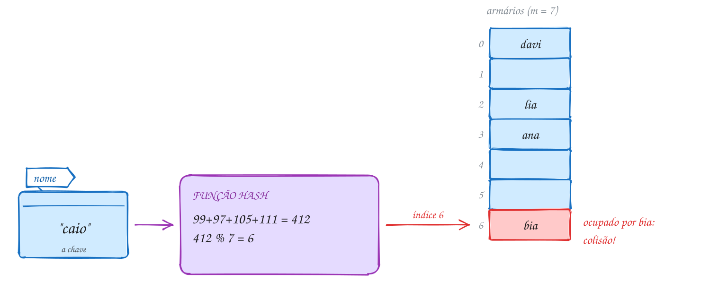
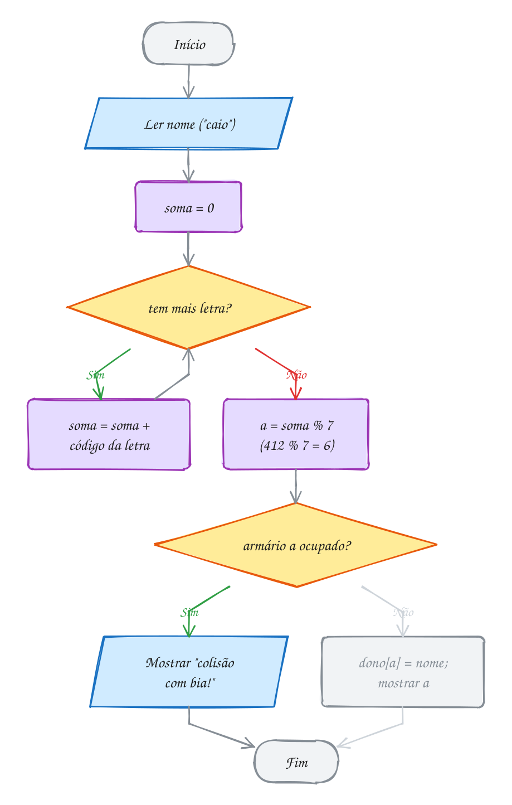
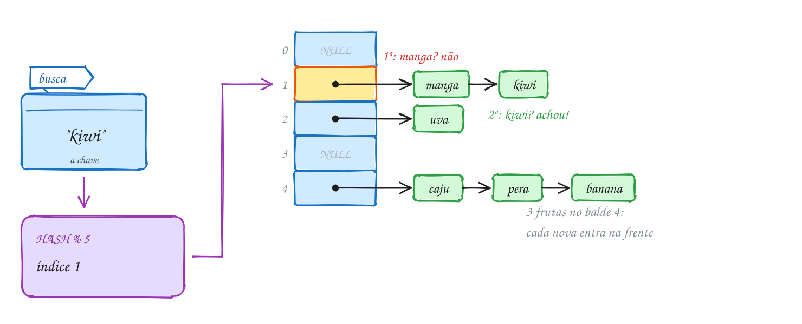
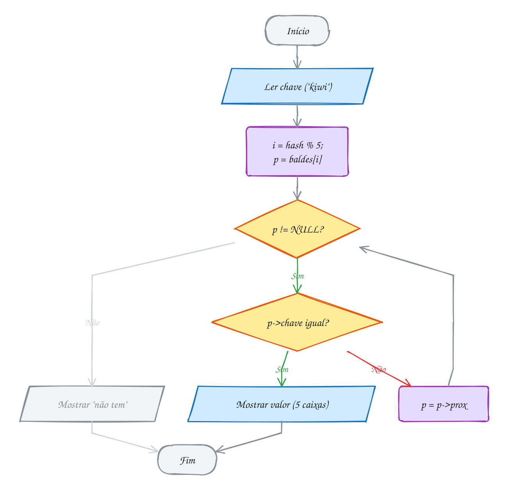
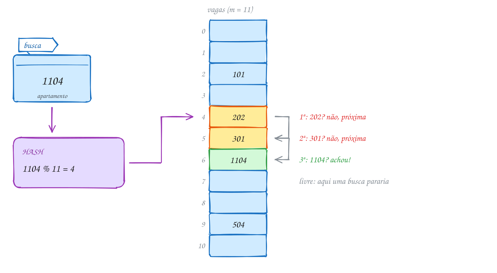
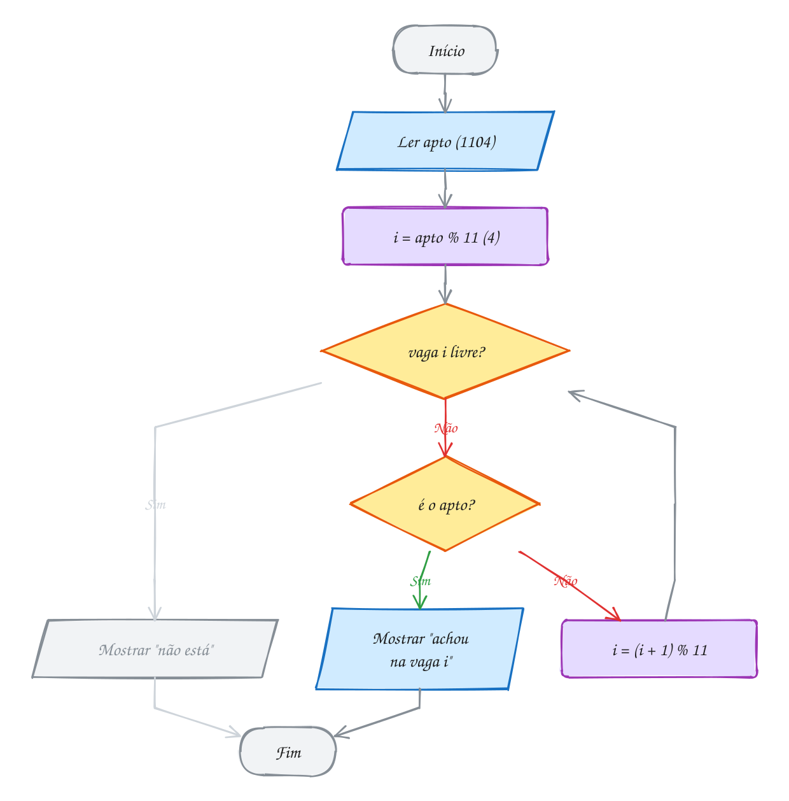
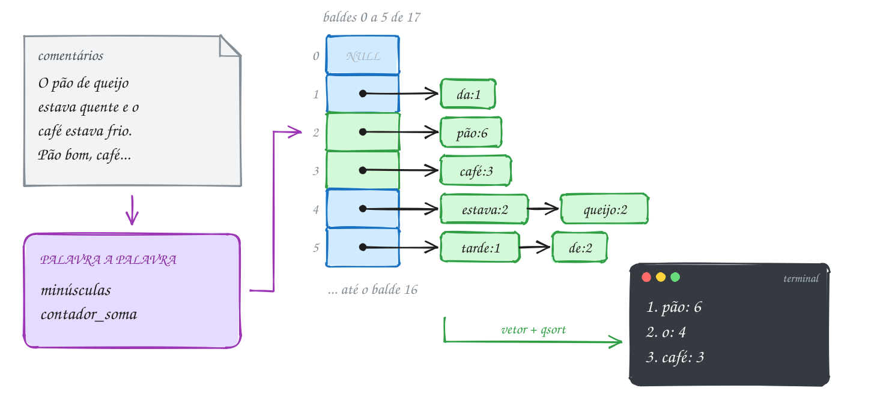
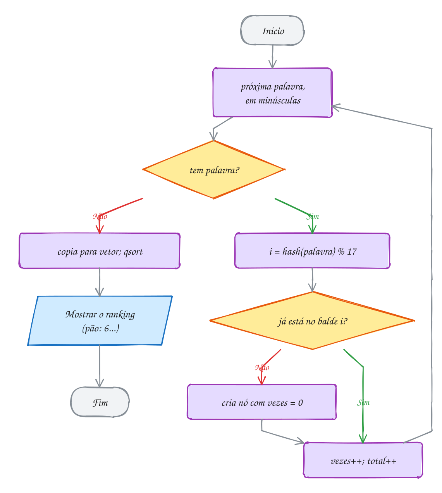

[!IMPORTANT] Mundo 6 · Tabelas hash · Rota do jogo: etapa 19 de 29
Missão: montar tabelas hash com encadeamento e endereçamento aberto.
Vem de: Módulo 22 · Árvores e conjuntos avançados. Segue para: Módulo 28 · Estruturas: o que faltava.
Checkpoints desta fase:
- Ler os assuntos 0105 a 0108 e refazer os exemplos
- Resolver os 4 exercícios de cada assunto, escrevendo o código sozinho
- Fechar a lista prática (P1501 a P1530)
- Enfrentar os desafios do módulo
- Chefão: resolver as questões de prova do módulo sem consultar
A tabela hash troca a procura por uma conta: a função hash leva a chave a um índice e o acesso custa O(1) na média. O módulo cobre função hash, colisão, encadeamento, endereçamento aberto e termina num contador de palavras. Usa a lista encadeada (módulo 11) e compara com a busca binária e a BST (13 e 14).
k % m, m primo) e para texto (polinômio de base 31, em unsigned)Usa listas (módulo 11), malloc/free, structs, ponteiro para função e
qsort. Cada assunto traz um TAD na pasta (tabela, aberta, palavras,
com .h e .c), e o comando compila tudo junto:
gcc ~/LPEDC/material/A211.c ~/LPEDC/material/0106-tabela.c -o ~/LPEDC/material/A211 && ~/LPEDC/material/A211
Nos desenhos, cada balde é uma gaveta com o índice à esquerda e a lista à direita; vermelho marca colisão.
| # | Assunto |
|---|---|
| 0105 | A ideia e a função hash |
| 0106 | Encadeamento |
| 0107 | Endereçamento aberto |
| 0108 | Juntando tudo: o contador de palavras |
[!NOTE] Cada assunto é um capítulo: Conceito (a explicação), Exemplos de uso (programas que compilam sozinhos: rode com o comando abaixo de cada um e compare com a saída no fim do código) e Exercícios (cada um é um arquivo em
material/com o esqueleto, as dicas e o espaço para a resposta; resoluções em_respostas/15-hash/).
Num vetor, v[i] custa O(1): o C calcula o endereço da posição i e vai
direto a ela, sem olhar as outras. A busca sequencial e a binária não têm essa
sorte, porque precisam comparar a chave com vários itens até achar o certo. A
tabela hash nasce de uma pergunta simples: dá para transformar a chave num
índice e ter o acesso direto do vetor para qualquer tipo de chave?
Quando a chave já é um número pequeno, a resposta é sim, e de graça. Com
const char *estado[100], o DDD 61 serve de índice e estado[61] devolve "DF"
num passo só. Isso se chama endereçamento direto: a chave é o próprio
índice do vetor (TENENBAUM; LANGSAM; AUGENSTEIN, 1995, cap. 7). O exemplo A209
mostra essa tabela. O método falha em dois casos. Se a chave é grande, o vetor
fica impossível: um CPF tem 11 dígitos e pediria cem bilhões de posições para
guardar algumas centenas de clientes. E se a chave nem é número, como um nome,
não há índice para usar.
Pense no guarda-volumes de uma academia. A recepcionista não procura armário
vago de porta em porta: aplica uma regra ao seu nome, e a regra devolve o
número do armário. Na saída, a mesma regra diz onde estão as suas coisas. Essa
regra é a função hash, que recebe a chave e devolve um índice entre 0 e
m - 1, sendo m o tamanho do vetor. O vetor que guarda os itens é a
tabela hash, e cada posição dele é um balde (CORMEN et al., 2024, cap. 11).
Nem toda regra serve. A função precisa ser determinística: a mesma chave sempre dá o mesmo índice, senão você guarda num balde e procura em outro. Ela precisa ser rápida, porque roda a cada busca e a cada inserção. E precisa espalhar: chaves diferentes devem cair em baldes diferentes o máximo possível. Para espalhar bem, o cálculo deve usar todas as partes da chave. Uma função que olha só a primeira letra põe "Ana" e "Alice" sempre juntas (TENENBAUM; LANGSAM; AUGENSTEIN, 1995, cap. 7).
Para chave inteira, a regra mais usada é o método da divisão: h(k) = k mod m,
que em C se escreve k % m. O resto da divisão por m sempre fica entre 0 e
m - 1, que é exatamente a faixa dos baldes. A escolha de m pesa. Prefira um
primo longe de uma potência de 2. Com m = 2^p, o resto guarda só os p bits
de baixo da chave e ignora o resto dela: com m = 16, as chaves 5, 21 e 37
caem todas no balde 5 (CORMEN et al., 2024, cap. 11). O método da
multiplicação fica para o assunto 0178.
Para texto, o caminho mais simples é somar os códigos das letras e tirar o
resto por m. A letra é um char, e no gcc de PC o char tem sinal: os bytes
do "ã" em UTF-8 viram números negativos, e um resto negativo (-98 % 8 dá -2)
seria um índice fora do vetor. Por isso a função lê cada letra como
unsigned char e acumula a soma num unsigned. Quando um unsigned estoura,
ele volta a contar do zero (aritmética módulo 2³²), e isso é definido pela
norma; o estouro de int não é (KERNIGHAN; RITCHIE, 1988, seção 6.6).
Agora o ponto que define todo o resto do módulo. Existem muito mais chaves possíveis do que baldes, então duas chaves diferentes vão cair no mesmo balde. Isso é uma colisão, e nenhuma função a evita para sempre (KNUTH, 1998, seção 6.4). O que se faz é tratá-la, e os assuntos 0106 e 0107 mostram as duas maneiras clássicas.
O aperto da tabela tem nome: fator de carga, α = n / m, o número de itens
dividido pelo número de baldes, ou quantos itens cabem em média em cada balde.
Cinco itens em 7 baldes dão α ≈ 0,71. Quanto mais perto de 1, mais colisões
aparecem e mais devagar a tabela fica (CORMEN et al., 2024, cap. 11).
[!WARNING] A soma não vê a ordem das letras: "amor", "roma", "mora" e "ramo" somam 431 e caem no mesmo balde. Use o polinômio
h = h * 31 + letra, que multiplica cada letra pela sua posição (exemplo A210).
O guarda-volumes da academia tem 7 armários, e a regra é "soma dos códigos das letras, resto por 7". "caio" soma 412 e cai no 6; "bia" soma 300, também dá 6 e chegou antes. Os outros três caem em armários livres:

No código, o vetor dono é a tabela e NULL é armário vazio. O programa só
detecta a colisão:
#include <stdio.h>
#define ARMARIOS 7
// função hash: soma os códigos das letras e reduz para 0..6
int armario(const char *nome) {
unsigned soma = 0;
for (int i = 0; nome[i] != '\0'; i++) {
soma += (unsigned char)nome[i]; // o byte da letra, sempre >= 0
}
return (int)(soma % ARMARIOS);
}
int main(void) {
const char *dono[ARMARIOS] = {NULL}; // NULL = armário vazio
const char *alunos[] = {"ana", "davi", "lia", "bia", "caio"};
for (int i = 0; i < 5; i++) {
int a = armario(alunos[i]);
if (dono[a] == NULL) {
dono[a] = alunos[i];
printf("%-4s -> armário %d\n", alunos[i], a);
} else {
printf("%-4s -> armário %d (colisão com %s!)\n", alunos[i], a, dono[a]);
}
}
return 0;
}
// Saída:
// ana -> armário 3
// davi -> armário 0
// lia -> armário 2
// bia -> armário 6
// caio -> armário 6 (colisão com bia!)
O fluxograma mostra o caminho do "caio": quatro voltas no laço, índice 6, armário ocupado, colisão:

Exemplo A209 · DDD direto no vetor
#include <stdio.h>
#define FAIXA 100 // DDDs vão de 11 a 99: cabem num vetor de 100
int main(void) {
// endereçamento direto: a própria chave é o índice (o "hash" é k)
const char *estado[FAIXA] = {NULL}; // NULL = DDD sem dono
estado[11] = "SP";
estado[21] = "RJ";
estado[31] = "MG";
estado[61] = "DF";
estado[71] = "BA";
estado[91] = "PA";
int consultas[] = {61, 11, 10, 91, 120};
for (int i = 0; i < 5; i++) {
int ddd = consultas[i];
if (ddd < 0 || ddd >= FAIXA) {
printf("DDD %3d -> fora da faixa\n", ddd); // nunca indexe sem conferir
} else if (estado[ddd] == NULL) {
printf("DDD %3d -> não existe\n", ddd);
} else {
printf("DDD %3d -> %s\n", ddd, estado[ddd]); // um passo: O(1)
}
}
int usadas = 0;
for (int i = 0; i < FAIXA; i++) {
if (estado[i] != NULL) {
usadas++;
}
}
printf("posições usadas: %d de %d\n", usadas, FAIXA); // o resto é desperdício
return 0;
}
// Saída:
// DDD 61 -> DF
// DDD 11 -> SP
// DDD 10 -> não existe
// DDD 91 -> PA
// DDD 120 -> fora da faixa
// posições usadas: 6 de 100
gcc ~/LPEDC/material/A209.c -o ~/LPEDC/material/A209 && ~/LPEDC/material/A209
Exemplo A210 · Anagramas: soma contra polinômio
#include <stdio.h>
#define M 11
// soma dos códigos: a ordem das letras não importa (ruim)
unsigned hash_soma(const char *s) {
unsigned h = 0;
for (int i = 0; s[i] != '\0'; i++) {
h += (unsigned char)s[i];
}
return h % M;
}
// polinômio de base 31: cada letra pesa conforme a posição
unsigned hash_pol(const char *s) {
unsigned h = 0;
for (int i = 0; s[i] != '\0'; i++) {
h = h * 31 + (unsigned char)s[i];
}
return h % M;
}
int main(void) {
const char *palavras[] = {"amor", "roma", "mora", "ramo"};
printf("palavra soma polinômio\n");
for (int i = 0; i < 4; i++) {
printf("%-7s %4u %9u\n", palavras[i], hash_soma(palavras[i]), hash_pol(palavras[i]));
}
return 0;
}
// Saída:
// palavra soma polinômio
// amor 2 3
// roma 2 5
// mora 2 2
// ramo 2 7
gcc ~/LPEDC/material/A210.c -o ~/LPEDC/material/A210 && ~/LPEDC/material/A210
Exercício E625 · ★☆☆
A lanchonete guarda os pedidos numa prateleira de 11 nichos. O nicho de um pedido é o resto da divisão do número do pedido por 11. Escreva a função "int nicho(int pedido)" e mostre o nicho dos pedidos 1043, 2210, 3876, 5521 e 7019, um por linha. Quando o nicho já tiver um pedido anterior, acrescente "(colide com NNNN)".
Saída esperada:
pedido 1043 -> nicho 9
pedido 2210 -> nicho 10
pedido 3876 -> nicho 4
pedido 5521 -> nicho 10 (colide com 2210)
pedido 7019 -> nicho 1
Exercício E627 · ★★☆
Escreva a função "unsigned hash_pol(const char *s)", o hash polinomial de base 31: começa com h = 0 e, para cada byte da string, faz h = h * 31 + byte (h unsigned; converta cada char para unsigned char). Ela devolve h % 13. Mostre o hash de "pix", "ted", "doc" e "boleto", com o nome alinhado à esquerda em 6 colunas.
Saída esperada:
pix -> 0
ted -> 8
doc -> 8
boleto -> 1
Exercício E628 · ★★☆
Na loja de material de construção, todo código de produto termina em 0: 120, 350, 470, 590, 610, 230, 740, 860, 980 e 440. Escreva um programa que espalha esses 10 códigos com "codigo % m" e mostra quantos caíram em cada balde, com uma estrela por código (número do balde em 2 colunas). No fim de cada tabela, mostre quantos baldes ficaram vazios. Faça para m = 10 e para m = 11.
Saída esperada:
m = 10
0: **********
1:
2:
3:
4:
5:
6:
7:
8:
9:
vazios: 9
m = 11
0: *
1: *
2: *
3: *
4:
5: *
6:
7: *
8: *
9: *
10: **
vazios: 2
Exercício E630 · ★★★
O compilador reconhece palavras reservadas o tempo todo. Para um conjunto fixo de chaves, dá para achar um hash "perfeito": uma tabela sem colisão. Com o hash polinomial de base 31 (h = h * 31 + byte, em unsigned), ache o MENOR m, a partir de 8, em que as 8 palavras abaixo caem em baldes todos diferentes: int, char, if, else, for, while, return e void. Mostre o m encontrado e o balde de cada palavra.
Saída esperada:
m = 14
int -> 5
char -> 10
if -> 11
else -> 1
for -> 7
while -> 13
return -> 4
void -> 8
O assunto 0105 terminou com uma certeza incômoda: duas chaves diferentes vão cair no mesmo balde. Se cada balde guarda um item só, o segundo não tem onde ficar. A primeira saída é deixar o balde guardar quantos itens precisar.
Pense no hortifrúti com o estoque em 5 prateleiras. Cada fruta tem a sua
prateleira, dada por uma regra. Quando duas frutas caem na mesma, ficam lado a
lado, e achar o kiwi é olhar só a prateleira dele, nunca o estoque inteiro.
Esse é o encadeamento, também chamado de encadeamento separado: cada balde
guarda a cabeça de uma lista encadeada com todos os itens cujo hash caiu
ali (CORMEN et al., 2024, cap. 11). A tabela vira um vetor de ponteiros,
No *baldes[m], e um balde vazio é só um ponteiro NULL.
Toda operação começa igual: calcule o balde, i = hash(chave) % m. Daí em
diante, é lista encadeada do módulo 11. Para inserir, procure a chave na
lista de baldes[i]. Se ela já está lá, troque o valor; se não está, crie um
nó e ponha no início da lista, que custa O(1) porque não precisa andar até
o fim. Para buscar, percorra só essa lista. Para remover, faça a
remoção de lista que você já conhece, guardando o nó anterior para religar o
prox (CELES; RANGEL, 2002).
Quanto custa buscar? Depende do tamanho da lista do balde. Se a função espalha
bem, as n chaves se dividem por igual entre os m baldes, e cada lista tem
em média α = n / m nós, o fator de carga do 0105. A busca então gasta um
passo para calcular o balde e mais α para percorrer a lista: Θ(1 + α) na
média (CORMEN et al., 2024, cap. 11). Se você aumenta m sempre que n
cresce, α fica parado num valor constante, e a busca passa a custar O(1) na
média. Esse é o motivo de a tabela hash ser tão usada.
O pior caso é outra história. Uma função ruim, que joga todas as chaves no mesmo balde, transforma a tabela numa lista única, e a busca volta a ser O(n) (TENENBAUM; LANGSAM; AUGENSTEIN, 1995, cap. 7). A estrutura é a mesma; quem decide se ela é rápida é a função hash.
Uma propriedade boa do encadeamento: a tabela nunca enche. Cada balde cresce o quanto precisar, então α pode passar de 1 sem problema. O exemplo A211 guarda 8 itens em 2 baldes, com α = 4. Fica lento, mas funciona (TENENBAUM; LANGSAM; AUGENSTEIN, 1995, cap. 7).
O preço está na memória. Cada nó é um malloc separado, e o sistema não
libera nada sozinho. A função tabela_libera percorre cada balde e dá free
em todos os nós, guardando o prox numa variável antes de liberar o nó atual,
porque depois do free ler p->prox é ler memória que não é mais sua. Dar
só free(t->baldes) libera o vetor de ponteiros e deixa as listas perdidas na
memória, sem ninguém apontando para elas (CELES; CERQUEIRA; RANGEL, 2016).
[!WARNING] Compare chave de texto com
strcmp, nunca com==:p->chave == chavecompara endereços. Pode funcionar com literais e quebra com chave vinda do teclado. O nó guarda a sua cópia da chave, porque o buffer de quem chamou é reaproveitado.
O hortifrúti guarda o estoque em 5 baldes, com o hash polinomial do 0105. Banana, uva, pera, kiwi, manga e caju caem em 4, 2, 4, 1, 1 e 4; cada nova entra no início. Buscar "kiwi" vai ao balde 1 e faz 2 comparações:

A estrutura segue o padrão TAD: tabela.h com a interface e o tipo opaco,
tabela.c com o nó, os baldes e as operações:
typedef struct No {
char chave[TAM_CHAVE]; // cópia da chave (não um ponteiro emprestado)
int valor;
struct No *prox;
} No;
struct Tabela {
int m; // número de baldes
int n; // número de itens
No **baldes; // vetor de m cabeças de lista
};
bool tabela_busca(const Tabela *t, const char *chave, int *valor, int *comparacoes) {
int i = (int)(hash(chave) % (unsigned)t->m);
int olhados = 0;
for (No *p = t->baldes[i]; p != NULL; p = p->prox) {
olhados++;
if (strcmp(p->chave, chave) == 0) {
*valor = p->valor;
if (comparacoes != NULL) {
*comparacoes = olhados;
}
return true;
}
}
if (comparacoes != NULL) {
*comparacoes = olhados;
}
return false;
}
O cliente conhece só o tabela.h:
#include <stdio.h>
#include "tabela.h"
int main(void) {
Tabela *estoque = tabela_cria(5);
if (estoque == NULL) {
return 1;
}
const char *frutas[] = {"banana", "uva", "pera", "kiwi", "manga", "caju"};
int caixas[] = {12, 30, 8, 5, 20, 14};
for (int i = 0; i < 6; i++) {
tabela_insere(estoque, frutas[i], caixas[i]);
}
tabela_mostra(estoque);
int qtd, olhados;
if (tabela_busca(estoque, "kiwi", &qtd, &olhados)) {
printf("kiwi: %d caixas (%d comparações)\n", qtd, olhados);
}
if (!tabela_busca(estoque, "limao", &qtd, &olhados)) {
printf("limao: não tem (%d comparações)\n", olhados);
}
tabela_libera(estoque);
return 0;
}
// Saída:
// [0]
// [1] -> manga:20 -> kiwi:5
// [2] -> uva:30
// [3]
// [4] -> caju:14 -> pera:8 -> banana:12
// kiwi: 5 caixas (2 comparações)
// limao: não tem (0 comparações)
No fluxograma da busca, o hash leva ao balde e o resto é o laço de lista. O "kiwi" dá uma volta (passa pela manga) e para no Sim; o "limao" cai no balde 0, vazio, e sai pelo Não:

Exemplo A211 · Poucos baldes: a tabela não enche
#include <stdio.h>
#include "0106-tabela.h"
#define N 8
// insere as verduras numa tabela de m baldes e mede o custo de achar cada uma
void testa(int m, const char *nomes[], const int qtd[]) {
Tabela *t = tabela_cria(m);
if (t == NULL) {
return;
}
for (int i = 0; i < N; i++) {
tabela_insere(t, nomes[i], qtd[i]);
}
printf("m = %d, n = %d, fator de carga = %.2f\n", m, tabela_tamanho(t),
(double)tabela_tamanho(t) / m);
tabela_mostra(t);
int total = 0;
for (int i = 0; i < N; i++) {
int valor, comp;
if (tabela_busca(t, nomes[i], &valor, &comp)) {
total += comp; // soma o custo de achar cada uma
}
}
printf("média para achar: %.2f comparações\n\n", (double)total / N);
tabela_libera(t);
}
int main(void) {
const char *verduras[N] = {"alface", "couve", "rucula", "agriao",
"salsa", "cebolinha", "coentro", "espinafre"};
int macos[N] = {40, 25, 18, 12, 30, 35, 22, 10};
testa(2, verduras, macos); // α = 4: correntes longas, mas cabe tudo
testa(11, verduras, macos); // α < 1: quase um passo por busca
return 0;
}
// Saída:
// m = 2, n = 8, fator de carga = 4.00
// [0] -> coentro:22 -> salsa:30 -> rucula:18 -> couve:25 -> alface:40
// [1] -> espinafre:10 -> cebolinha:35 -> agriao:12
// média para achar: 2.62 comparações
//
// m = 11, n = 8, fator de carga = 0.73
// [0] -> cebolinha:35
// [1]
// [2] -> alface:40
// [3] -> rucula:18
// [4] -> agriao:12
// [5]
// [6] -> couve:25
// [7]
// [8] -> espinafre:10
// [9]
// [10] -> coentro:22 -> salsa:30
// média para achar: 1.12 comparações
gcc ~/LPEDC/material/A211.c ~/LPEDC/material/0106-tabela.c -o ~/LPEDC/material/A211 && ~/LPEDC/material/A211
Exemplo A212 · Fim de feira: atualizar, remover e o fator de carga
#include <stdio.h>
#include "0106-tabela.h"
#define BALDES 5
int main(void) {
Tabela *estoque = tabela_cria(BALDES);
if (estoque == NULL) {
return 1;
}
tabela_insere(estoque, "banana", 12);
tabela_insere(estoque, "uva", 30);
tabela_insere(estoque, "pera", 8);
tabela_insere(estoque, "banana", 18); // chave repetida: só troca o valor
tabela_remove(estoque, "uva"); // a uva acabou
tabela_insere(estoque, "limao", 9); // chegou fruta nova
tabela_mostra(estoque);
int n = tabela_tamanho(estoque);
printf("itens: %d, fator de carga: %.2f\n", n, (double)n / BALDES);
if (!tabela_remove(estoque, "uva")) {
printf("uva: já tinha saído\n");
}
tabela_libera(estoque);
return 0;
}
// Saída:
// [0] -> limao:9
// [1]
// [2]
// [3]
// [4] -> pera:8 -> banana:18
// itens: 3, fator de carga: 0.60
// uva: já tinha saído
gcc ~/LPEDC/material/A212.c ~/LPEDC/material/0106-tabela.c -o ~/LPEDC/material/A212 && ~/LPEDC/material/A212
Exercício E631 · ★☆☆
Escreva uma tabela com encadeamento de 5 baldes (h(k) = k % 5; cada número novo entra no INÍCIO da corrente) com as funções insere, mostra e libera. Insira 12, 7, 20, 17, 3 e 25, nessa ordem. A função mostra imprime um balde por linha, com os números na ordem da corrente, e no fim os baldes vazios e o tamanho da corrente mais comprida.
Saída esperada:
[0] 25 20
[1]
[2] 17 7 12
[3] 3
[4]
vazios: 2, maior corrente: 3
gcc ~/LPEDC/material/E631.c ~/LPEDC/material/0106-tabela.c -o ~/LPEDC/material/E631 && ~/LPEDC/material/E631
Exercício E633 · ★★☆
No balcão da pizzaria, os pedidos prontos ficam numa tabela com 4 baldes e encadeamento (h = pedido % 4, inserção no início da corrente). Quando o cliente retira, o pedido sai da tabela. Escreva do zero: o nó, insere, "bool remove_pedido(No *baldes[], int pedido)", mostra e libera. Insira 101, 205, 309, 120, 222 e 315, mostre, retire 205, 309 e 999, e mostre de novo.
Saída esperada:
[0] 120
[1] 309 205 101
[2] 222
[3] 315
pedido 205 retirado
pedido 309 retirado
pedido 999 não existe
[0] 120
[1] 101
[2] 222
[3] 315
gcc ~/LPEDC/material/E633.c ~/LPEDC/material/0106-tabela.c -o ~/LPEDC/material/E633 && ~/LPEDC/material/E633
Exercício E634 · ★★☆
Um colega sugeriu usar o tamanho do nome como função hash ("é rápido!"). Compare as duas funções numa tabela com 8 baldes e estas 10 cidades:
recife natal manaus belem santos maceio osasco palmas macapa cuiaba
Para cada função (tamanho: strlen(s); polinômio: h = h * 31 + byte, em unsigned), mostre quantas cidades caem em cada balde, o tamanho da maior corrente e a média de comparações para achar uma cidade que está na tabela. Use um ponteiro para função para não escrever a análise duas vezes.
Saída esperada:
tamanho : 0 0 0 0 0 2 8 0 | maior: 8 | média: 3.9
polinomio: 2 2 1 1 3 1 0 0 | maior: 3 | média: 1.5
gcc ~/LPEDC/material/E634.c ~/LPEDC/material/0106-tabela.c -o ~/LPEDC/material/E634 && ~/LPEDC/material/E634
Exercício E636 · ★★★
No encadeamento a tabela nunca enche, mas as correntes crescem. A solução das bibliotecas é o rehash: quando o fator de carga passa de 1 (n > m), a tabela cria um vetor de baldes com 2 * m + 1 posições e muda cada nó para o balde novo, sem malloc de nó. Escreva a tabela de inteiros (struct com m, n e o vetor de baldes, alocado com calloc) com insere, cresce, mostra e libera. Comece com m = 2, insira 14, 5, 23, 8, 19, 40, 12, 31, 21 e 2, avise cada vez que a tabela crescer e mostre o resultado.
Saída esperada:
cresceu: m = 5
cresceu: m = 11
n = 10, m = 11
[0]
[1] 12 23
[2] 2
[3] 14
[4]
[5] 5
[6]
[7] 40
[8] 19 8
[9] 31
[10] 21
gcc ~/LPEDC/material/E636.c ~/LPEDC/material/0106-tabela.c -o ~/LPEDC/material/E636 && ~/LPEDC/material/E636
O encadeamento resolve a colisão com listas, e cada item custa um malloc.
Existe outro caminho: guardar tudo dentro do próprio vetor e, quando o balde
está ocupado, procurar outro.
Pense no estacionamento de um condomínio com 11 vagas. A vaga de cada carro é o número do apartamento com resto por 11. Se a vaga está ocupada, o motorista tenta a seguinte, e assim por diante. Na saída, o porteiro refaz o mesmo caminho para achar o carro. Esse é o endereçamento aberto: não há lista, os itens moram dentro do vetor, e quem colide tenta outras posições numa sequência fixa. Cada tentativa se chama sondagem (CORMEN et al., 2024, cap. 11).
A sequência mais simples é a sondagem linear. Ela começa em
i = chave % m e anda uma casa por vez; ao passar da última posição, volta para
a primeira, e por isso o passo é i = (i + 1) % m. Na notação do Cormen, a
tentativa número i, contada a partir de 0, olha a posição
h(k, i) = (h'(k) + i) mod m, sendo h' a função hash comum (CORMEN et al.,
2024, cap. 11). Com m = 11, a chave 301 começa na posição 4; se a 4 está
ocupada, tenta a 5, depois a 6.
Trocando o passo, nascem outras sondagens. A sondagem quadrática pula
distâncias que crescem com o quadrado da tentativa,
(h'(k) + c₁i + c₂i²) mod m, com c₁ e c₂ constantes. A dispersão dupla
usa uma segunda função hash para decidir o tamanho do pulo,
(h₁(k) + i · h₂(k)) mod m, e fica para o assunto 0179 (TENENBAUM; LANGSAM;
AUGENSTEIN, 1995, cap. 7).
As operações seguem a sequência de sondagens. Inserir sonda até achar uma posição livre e grava ali. Buscar sonda até achar a chave ou até cair numa posição livre. Parar na livre é seguro: se a chave existisse, a inserção teria parado nessa vaga ou antes dela (ZIVIANI, 2010, cap. 5).
Remover é onde mora a pegadinha. Se você esvazia a vaga, quebra a
sequência de quem passou por ela para chegar mais longe. A solução é uma
terceira marca, além de livre e ocupada: removida, chamada de lápide
(tombstone; no Cormen, DELETED). A busca passa reto pela lápide, como se a
vaga estivesse ocupada, e a inserção pode reaproveitá-la (CORMEN et al., 2024,
cap. 11). Com muitas lápides, as buscas sem sucesso ficam longas até a tabela
ser reconstruída.
Ao contrário do encadeamento, aqui a tabela enche: α = n / m nunca passa
de 1, e ela fica lenta bem antes disso. As posições ocupadas formam blocos
contínuos, e toda chave que cai num bloco vai parar no fim dele, aumentando o
bloco. É o agrupamento primário, e ele piora rápido. Com sondagem linear e
α = 0,5, uma busca sem sucesso olha em média 2,5 posições; com α = 0,9, cerca
de 50 (KNUTH, 1998, seção 6.4).
Por isso, quando a ocupação passa de 70% a 75%, crie uma tabela maior e
reinsira tudo nela (exemplo A213). Mesmo com esse cuidado, o endereçamento
aberto costuma ganhar do encadeamento na prática: as vagas formam um bloco só
de memória, sem malloc por item, e andar para a vaga seguinte aproveita a
cache do processador, a memória rápida que guarda os bytes vizinhos do que
você acabou de ler (TENENBAUM; LANGSAM; AUGENSTEIN, 1995, cap. 7).
[!WARNING] Remover não é marcar a posição como livre. Se a vaga 5 (do 301) volta a
LIVRE, a busca pelo 1104 começa na 4, vê a 5 livre e conclui "não está", embora ele esteja na 6. Use a lápide (exemplo A214).
O estacionamento do condomínio tem 11 vagas, e a vaga é o apartamento com resto por 11. O 301 dá 4, ocupada, e para na 5; o 1104 tenta 4, 5 e para na 6. Buscar o 1104 custa 3 sondagens:

O TAD é aberta.h (interface) e aberta.c (vetor de vagas, cada uma com
estado LIVRE, OCUPADA ou REMOVIDA). A busca é este laço:
// anda a partir de chave % m até achar a chave ou uma posição LIVRE;
// passa reto pelas REMOVIDAS. Devolve a posição da chave ou -1.
static int procura(const Aberta *t, int chave, int *sondagens) {
int i = chave % t->m;
int olhadas = 0;
for (int passo = 0; passo < t->m; passo++) {
olhadas++;
if (t->v[i].estado == LIVRE) {
break; // a corrente de tentativas acaba aqui
}
if (t->v[i].estado == OCUPADA && t->v[i].chave == chave) {
if (sondagens != NULL) {
*sondagens = olhadas;
}
return i;
}
i = (i + 1) % t->m; // a próxima, dando a volta no fim
}
if (sondagens != NULL) {
*sondagens = olhadas;
}
return -1;
}
O programa do condomínio:
#include <stdio.h>
#include "aberta.h"
int main(void) {
Aberta *vagas = aberta_cria(11);
if (vagas == NULL) {
return 1;
}
int aptos[] = {101, 202, 301, 1104, 504};
int horas[] = {7, 8, 8, 9, 10};
for (int i = 0; i < 5; i++) {
int s;
int vaga = aberta_insere(vagas, aptos[i], horas[i], &s);
printf("apto %4d: hash %d -> vaga %d, sondagens: %d\n", aptos[i], aptos[i] % 11, vaga, s);
}
aberta_mostra(vagas);
int hora, s;
if (aberta_busca(vagas, 1104, &hora, &s)) {
printf("1104 entrou às %dh, sondagens: %d\n", hora, s);
}
if (!aberta_busca(vagas, 303, &hora, &s)) {
printf("303 não está, sondagens: %d\n", s);
}
aberta_libera(vagas);
return 0;
}
// Saída:
// apto 101: hash 2 -> vaga 2, sondagens: 1
// apto 202: hash 4 -> vaga 4, sondagens: 1
// apto 301: hash 4 -> vaga 5, sondagens: 2
// apto 1104: hash 4 -> vaga 6, sondagens: 3
// apto 504: hash 9 -> vaga 9, sondagens: 1
// [ 0] -
// [ 1] -
// [ 2] 101
// [ 3] -
// [ 4] 202
// [ 5] 301
// [ 6] 1104
// [ 7] -
// [ 8] -
// [ 9] 504
// [10] -
// 1104 entrou às 9h, sondagens: 3
// 303 não está, sondagens: 2
No fluxograma, "está livre?" encerra sem sucesso e "é o carro?" encerra com sucesso; senão, anda uma vaga. O 1104 é achado na 6; o 303 para na 7, livre:

Exemplo A213 · Garagem lotando: a volta no fim e a tabela cheia
#include <stdio.h>
#include "0107-aberta.h"
#define VAGAS 7
int main(void) {
Aberta *garagem = aberta_cria(VAGAS);
if (garagem == NULL) {
return 1;
}
// vários apartamentos caem no fim do vetor (hash 5 e 6)
int aptos[] = {13, 20, 5, 27, 12, 3, 8, 41};
int ocupadas = 0;
for (int i = 0; i < 8; i++) {
int s;
int vaga = aberta_insere(garagem, aptos[i], 18, &s);
if (vaga < 0) {
printf("apto %2d: hash %d -> garagem cheia! (%d sondagens)\n", aptos[i], aptos[i] % VAGAS, s);
} else {
ocupadas++;
printf("apto %2d: hash %d -> vaga %d, sondagens: %d, carga %.2f\n",
aptos[i], aptos[i] % VAGAS, vaga, s, (double)ocupadas / VAGAS);
}
}
aberta_mostra(garagem); // um bloco só: quem cai nele anda até o fim
aberta_libera(garagem);
return 0;
}
// Saída:
// apto 13: hash 6 -> vaga 6, sondagens: 1, carga 0.14
// apto 20: hash 6 -> vaga 0, sondagens: 2, carga 0.29
// apto 5: hash 5 -> vaga 5, sondagens: 1, carga 0.43
// apto 27: hash 6 -> vaga 1, sondagens: 3, carga 0.57
// apto 12: hash 5 -> vaga 2, sondagens: 5, carga 0.71
// apto 3: hash 3 -> vaga 3, sondagens: 1, carga 0.86
// apto 8: hash 1 -> vaga 4, sondagens: 4, carga 1.00
// apto 41: hash 6 -> garagem cheia! (7 sondagens)
// [ 0] 20
// [ 1] 27
// [ 2] 12
// [ 3] 3
// [ 4] 8
// [ 5] 5
// [ 6] 13
gcc ~/LPEDC/material/A213.c ~/LPEDC/material/0107-aberta.c -o ~/LPEDC/material/A213 && ~/LPEDC/material/A213
Exemplo A214 · O carro do 301 saiu: a marca de removida
#include <stdio.h>
#include "0107-aberta.h"
int main(void) {
Aberta *vagas = aberta_cria(11);
if (vagas == NULL) {
return 1;
}
int aptos[] = {101, 202, 301, 1104, 504};
for (int i = 0; i < 5; i++) {
aberta_insere(vagas, aptos[i], 8, NULL);
}
aberta_remove(vagas, 301); // a vaga 5 vira "removida", não livre
int hora, s;
if (aberta_busca(vagas, 1104, &hora, &s)) {
printf("1104 ainda é encontrado, sondagens: %d\n", s); // passa pela 5
}
// 103 % 11 = 4. Olha a 4 (ocupada), a 5 (removida: guarda), a 6 e a 7
// (livre: o 103 não está na tabela) e só então usa a 5
int vaga = aberta_insere(vagas, 103, 11, &s);
printf("103 -> vaga %d, sondagens: %d\n", vaga, s);
aberta_mostra(vagas);
aberta_libera(vagas);
return 0;
}
// Saída:
// 1104 ainda é encontrado, sondagens: 3
// 103 -> vaga 5, sondagens: 4
// [ 0] -
// [ 1] -
// [ 2] 101
// [ 3] -
// [ 4] 202
// [ 5] 103
// [ 6] 1104
// [ 7] -
// [ 8] -
// [ 9] 504
// [10] -
gcc ~/LPEDC/material/A214.c ~/LPEDC/material/0107-aberta.c -o ~/LPEDC/material/A214 && ~/LPEDC/material/A214
Exercício E637 · ★☆☆
Escreva um programa com uma tabela de 7 inteiros, todos começando com -1 (livre), que insere 10, 24, 5, 17 e 31 com sondagem linear (h = k % 7; se ocupada, tenta a próxima, dando a volta no fim) e mostra a tabela.
Saída esperada:
[0] 31
[1] -
[2] -
[3] 10
[4] 24
[5] 5
[6] 17
gcc ~/LPEDC/material/E637.c ~/LPEDC/material/0107-aberta.c -o ~/LPEDC/material/E637 && ~/LPEDC/material/E637
Exercício E639 · ★★☆
Os armários da escola usam endereçamento aberto com 7 posições (h = k % 7, sondagem linear) e o enum Estado { LIVRE, OCUPADA, REMOVIDA }. Escreva "guarda" e "bool busca(const Armario t[], int chave, int *sondagens)", que conta as sondagens, para ao achar a chave (true) ou uma posição LIVRE (false), passa reto pelas REMOVIDAS e nunca dá mais de 7 passos. Guarde 14, 21 e 28 (vão para 0, 1 e 2), marque a posição do 21 como REMOVIDA e busque 28 e 35.
Saída esperada:
28: achou, sondagens: 3
35: não está, sondagens: 4
gcc ~/LPEDC/material/E639.c ~/LPEDC/material/0107-aberta.c -o ~/LPEDC/material/E639 && ~/LPEDC/material/E639
Exercício E640 · ★★☆
Uma tabela com endereçamento aberto enche. Escreva "int insere(int tab[], int chave)" para uma tabela de 5 posições (-1 = livre, h = k % 5, sondagem linear) que devolve a posição usada ou -1 se a tabela estiver cheia, sem nunca entrar em laço infinito. Insira 12, 7, 3, 9, 15 e 20 e mostre a posição e o fator de carga depois de cada inserção.
Saída esperada:
12 -> 2 (carga 0.20)
7 -> 3 (carga 0.40)
3 -> 4 (carga 0.60)
9 -> 0 (carga 0.80)
15 -> 1 (carga 1.00)
20: tabela cheia!
gcc ~/LPEDC/material/E640.c ~/LPEDC/material/0107-aberta.c -o ~/LPEDC/material/E640 && ~/LPEDC/material/E640
Exercício E642 · ★★★
A sondagem linear forma blocos; o hash duplo usa i = (i + passo) % m com passo = 1 + k % 10 (m = 11, primo: o passo visita todas as posições). Escreva uma função que simula as inserções das chaves 5 16 27 8 38 19 30 2 numa tabela de 11 posições, recebendo o passo por ponteiro para função. Mostre as sondagens de cada inserção e o total, primeiro com passo 1 e depois com o hash duplo.
Saída esperada:
linear: 1 2 3 1 5 3 4 1 | total: 20
duplo : 1 2 2 1 2 2 2 4 | total: 16
gcc ~/LPEDC/material/E642.c ~/LPEDC/material/0107-aberta.c -o ~/LPEDC/material/E642 && ~/LPEDC/material/E642
Contar quantas vezes cada palavra aparece num texto é o problema que mais mostra para que serve uma tabela hash. Sem ela, cada palavra lida exige procurar numa lista de palavras já vistas, comparando uma por uma. Com ela, a procura cai direto no balde certo.
A ideia é usar a tabela como um dicionário: um conjunto de pares em que a
chave é a palavra e o valor é a contagem. Cada palavra do texto vira
uma busca seguida de um +1. Se a palavra ainda não existe, ela entra com
contagem 1 (KERNIGHAN; RITCHIE, 1988, seção 6.6). É o mesmo que o caixa da
padaria faria com um caderno indexado pela primeira letra: abre na página
certa e risca mais um ao lado do nome.
Antes de contar, o texto precisa virar palavras. As funções de ctype.h
resolvem isso: isalpha diz se um byte é letra, e tolower passa a letra para
minúscula. Com tudo em minúsculas, "Pão" e "pão" viram a mesma chave e contam
juntas (CPPREFERENCE, s.d.). Os bytes de letras acentuadas em UTF-8 ficam acima
de 127; o exemplo trata todo byte a partir de 128 como parte da palavra, e
"pão" e "café" não se partem no meio.
A tabela usa encadeamento, do assunto 0106, empacotada como um TAD em
palavras.h. A função contador_soma calcula o balde, procura a palavra na
lista dele e soma 1 se achar. Se não achar, cria um nó com uma cópia da
palavra, porque o texto de onde ela veio vai ser reaproveitado para a palavra
seguinte (CELES; RANGEL, 2002).
O ranking pede ordem, e a tabela não tem nenhuma: a função hash espalha as
palavras de propósito. Por isso as contagens saem da tabela para um vetor, e o
qsort (assuntos 0050 e 0096) ordena esse vetor pelo número de vezes e, no
empate, pela palavra em ordem alfabética (TENENBAUM; LANGSAM; AUGENSTEIN, 1995,
cap. 7).
Faça a conta do ganho. Com N palavras no texto e d palavras
diferentes, a busca sequencial compara cada uma das N com até d já vistas:
O(N · d). A tabela faz cada busca em O(1) na média, então o total é O(N), mais
O(d log d) do qsort no fim (CORMEN et al., 2024, cap. 11).
Um detalhe na escolha de m. O hash polinomial usa base 31, e a base e m não
podem ter fator comum. Com base 31 e m = 31, toda parcela multiplicada por 31
some no resto, e o balde passa a depender só da última letra. O exemplo usa
m = 17, primo e diferente de 31 (CORMEN et al., 2024, cap. 11).
Outro detalhe, de memória. O vetor de contagens não copia as palavras: cada
campo palavra aponta para o texto guardado num nó da tabela. Se você libera a
tabela primeiro, o vetor fica apontando para memória devolvida. Por isso o
free(lista) vem antes de contador_libera (CELES; CERQUEIRA; RANGEL, 2016).
[!WARNING]
isalphaetolowerexigem umunsigned char(0 a 255) ouEOF. Os bytes do "ã" em UTF-8 são negativos numcharcom sinal (assunto 0105), eisalpha(s[i])com negativo é comportamento indefinido. Converta:isalpha((unsigned char)s[i]).
A padaria quer saber do que os clientes falam nos comentários do app. São 31
palavras, 17 diferentes, em 17 baldes. O "pão" cai no balde 2 e chega a 6;
"estava" e "queijo" dividem o balde 4. O qsort monta o ranking:

O main conhece só as funções do TAD palavras.h. O eh_letra trata todo
byte a partir de 128 como letra, e "pão" e "café" ficam inteiras:
#include <stdio.h>
#include <stdlib.h>
#include <string.h>
#include <ctype.h>
#include "palavras.h"
// letra = letra ASCII ou qualquer byte de um caractere UTF-8 (>= 128)
int eh_letra(char c) {
unsigned char u = (unsigned char)c;
return isalpha(u) || u >= 128;
}
// copia a próxima palavra de *p para buf, em minúsculas, e avança *p.
// devolve 0 quando o texto acaba
int proxima_palavra(const char **p, char *buf, size_t tam) {
while (**p != '\0' && !eh_letra(**p)) {
(*p)++; // pula espaço, pontuação, número
}
if (**p == '\0') {
return 0;
}
size_t n = 0;
while (eh_letra(**p)) {
if (n < tam - 1) {
buf[n++] = (char)tolower((unsigned char)**p);
}
(*p)++;
}
buf[n] = '\0';
return 1;
}
// mais vezes primeiro; no empate, ordem alfabética
int compara(const void *a, const void *b) {
const Contagem *x = a;
const Contagem *y = b;
if (x->vezes != y->vezes) {
return y->vezes - x->vezes;
}
return strcmp(x->palavra, y->palavra);
}
int main(void) {
const char *texto =
"O pão de queijo estava quente e o café estava frio. "
"Pão bom, café ruim: o pão de queijo salva a padaria. "
"O café da tarde? Pão, pão e mais pão!";
Contador *c = contador_cria(17);
if (c == NULL) {
return 1;
}
char palavra[TAM_PALAVRA];
const char *p = texto;
while (proxima_palavra(&p, palavra, sizeof palavra)) {
contador_soma(c, palavra);
}
int n = contador_distintas(c);
printf("%d palavras, %d diferentes\n", contador_total(c), n);
Contagem *lista = contador_lista(c);
if (lista != NULL) {
qsort(lista, (size_t)n, sizeof lista[0], compara);
for (int i = 0; i < 5 && i < n; i++) {
printf("%d. %s: %d\n", i + 1, lista[i].palavra, lista[i].vezes);
}
free(lista);
}
contador_libera(c);
return 0;
}
// Saída:
// 31 palavras, 17 diferentes
// 1. pão: 6
// 2. o: 4
// 3. café: 3
// 4. de: 2
// 5. e: 2
No fluxograma, "já está no balde?" ocorre 31 vezes: 14 Sim e 17 Não (uma por
palavra diferente, que cria o nó com 0). Os dois caminhos se juntam no
vezes++:

Exemplo A215 · Enquete da pizzaria: contar e consultar
#include <stdio.h>
#include <stdlib.h>
#include <ctype.h>
#include "0108-palavras.h"
// copia o voto para buf em minúsculas: "CALABRESA" e "calabresa" são um só
void normaliza(const char *voto, char *buf, size_t tam) {
size_t n = 0;
for (; voto[n] != '\0' && n < tam - 1; n++) {
buf[n] = (char)tolower((unsigned char)voto[n]);
}
buf[n] = '\0';
}
int main(void) {
const char *votos[] = {"Calabresa", "mussarela", "CALABRESA", "portuguesa",
"frango", "Mussarela", "calabresa", "Frango",
"calabresa", "marguerita"};
int n_votos = (int)(sizeof votos / sizeof votos[0]);
Contador *c = contador_cria(7);
if (c == NULL) {
return 1;
}
char sabor[TAM_PALAVRA];
for (int i = 0; i < n_votos; i++) {
normaliza(votos[i], sabor, sizeof sabor);
contador_soma(c, sabor);
}
printf("%d votos, %d sabores\n", contador_total(c), contador_distintas(c));
// consulta direta: um balde, sem percorrer os votos de novo
const char *perguntas[] = {"frango", "calabresa", "atum"};
for (int i = 0; i < 3; i++) {
printf("%-9s: %d voto(s)\n", perguntas[i], contador_vezes(c, perguntas[i]));
}
// o vencedor: basta uma passada no vetor, sem qsort
Contagem *lista = contador_lista(c);
if (lista != NULL) {
int melhor = 0;
for (int i = 1; i < contador_distintas(c); i++) {
if (lista[i].vezes > lista[melhor].vezes) {
melhor = i;
}
}
printf("vencedor: %s\n", lista[melhor].palavra);
free(lista); // antes de liberar a tabela: a lista aponta para ela
}
contador_libera(c);
return 0;
}
// Saída:
// 10 votos, 5 sabores
// frango : 2 voto(s)
// calabresa: 4 voto(s)
// atum : 0 voto(s)
// vencedor: calabresa
gcc ~/LPEDC/material/A215.c ~/LPEDC/material/0108-palavras.c -o ~/LPEDC/material/A215 && ~/LPEDC/material/A215
Exemplo A216 · Contando as palavras de qualquer texto (entrada padrão)
#include <stdio.h>
#include <stdlib.h>
#include <string.h>
#include <ctype.h>
#include "0108-palavras.h"
int eh_letra(char c) {
unsigned char u = (unsigned char)c;
return isalpha(u) || u >= 128;
}
int proxima_palavra(const char **p, char *buf, size_t tam) {
while (**p != '\0' && !eh_letra(**p)) {
(*p)++;
}
if (**p == '\0') {
return 0;
}
size_t n = 0;
while (eh_letra(**p)) {
if (n < tam - 1) {
buf[n++] = (char)tolower((unsigned char)**p);
}
(*p)++;
}
buf[n] = '\0';
return 1;
}
int compara(const void *a, const void *b) {
const Contagem *x = a;
const Contagem *y = b;
if (x->vezes != y->vezes) {
return y->vezes - x->vezes;
}
return strcmp(x->palavra, y->palavra);
}
int main(void) {
Contador *c = contador_cria(101);
if (c == NULL) {
return 1;
}
char linha[256]; // linha maior que isso chega em pedaços
char palavra[TAM_PALAVRA];
while (fgets(linha, sizeof linha, stdin) != NULL) {
const char *p = linha;
while (proxima_palavra(&p, palavra, sizeof palavra)) {
contador_soma(c, palavra);
}
}
int n = contador_distintas(c);
Contagem *lista = contador_lista(c);
if (lista == NULL) {
contador_libera(c);
return 1;
}
qsort(lista, (size_t)n, sizeof lista[0], compara);
int uma_vez = 0;
for (int i = 0; i < n; i++) {
if (lista[i].vezes == 1) {
uma_vez++;
}
}
printf("%d palavras, %d diferentes, %d aparecem uma vez só\n", contador_total(c), n, uma_vez);
for (int i = 0; i < 3 && i < n; i++) {
printf("%d. %s: %d\n", i + 1, lista[i].palavra, lista[i].vezes);
}
printf("\"casa\" aparece %d vezes\n", contador_vezes(c, "casa"));
free(lista);
contador_libera(c);
return 0;
}
// Para testar com um arquivo: ~/LPEDC/rodar A216.c < texto.txt
// Exemplo:
// $ printf 'Quem casa quer casa.\nQuem não casa, quer casar!\n' | ~/LPEDC/rodar A216.c
// 9 palavras, 5 diferentes, 2 aparecem uma vez só
// 1. casa: 3
// 2. quem: 2
// 3. quer: 2
// "casa" aparece 3 vezes
gcc ~/LPEDC/material/A216.c ~/LPEDC/material/0108-palavras.c -o ~/LPEDC/material/A216 && ~/LPEDC/material/A216
Exercício E643 · ★☆☆
O primeiro passo do contador é quebrar o texto em palavras. Escreva um programa que percorre a frase "Bom dia, Brasil! Bom dia, São Paulo.", mostra cada palavra em minúsculas, uma por linha, e no fim o total. Palavra é uma sequência de letras; letra é o que isalpha aceita ou qualquer byte de 128 para cima (os pedaços de "ã" em UTF-8).
Saída esperada:
bom
dia
brasil
bom
dia
são
paulo
7 palavras
gcc ~/LPEDC/material/E643.c ~/LPEDC/material/0108-palavras.c -o ~/LPEDC/material/E643 && ~/LPEDC/material/E643
Exercício E645 · ★★☆
Às vezes você não quer contar tudo, só saber se algo já apareceu. Use uma tabela hash como CONJUNTO (só chaves, sem contagem) para achar a primeira palavra que aparece pela segunda vez na frase
Quem parte e reparte fica com a maior parte
e em que posição ela se repete. Ignore maiúsculas. Use 13 baldes, encadeamento e o hash polinomial.
Saída esperada:
primeira repetida: parte (palavra 9)
gcc ~/LPEDC/material/E645.c ~/LPEDC/material/0108-palavras.c -o ~/LPEDC/material/E645 && ~/LPEDC/material/E645
Exercício E646 · ★★☆
Escreva a função compara para o qsort ordenar um vetor de "Contagem" (struct com "const char *palavra" e "int vezes") com mais vezes primeiro e, no empate, em ordem alfabética. Ordene a lista da feira (feira 3, banana 5, alface 3, ovo 5, queijo 1, caqui 3) e mostre uma por linha.
Saída esperada:
banana 5
ovo 5
alface 3
caqui 3
feira 3
queijo 1
gcc ~/LPEDC/material/E646.c ~/LPEDC/material/0108-palavras.c -o ~/LPEDC/material/E646 && ~/LPEDC/material/E646
Exercício E647 · ★★★
Escreva um contador de palavras com tabela de encadeamento de 5 baldes (hash h = h * 31 + byte em unsigned, resto por 5; nó novo entra no início da corrente). Separe a frase "sol e mar e sol e pera e lua" copiando cada palavra para o mesmo vetor "char atual[16]", reaproveitado; cada nó guarda a sua cópia. Mostre "palavra: vezes" balde a balde, libere a tabela e acrescente o número de palavras diferentes.
Saída esperada:
mar: 1
e: 4
lua: 1
pera: 1
sol: 2
diferentes: 5
gcc ~/LPEDC/material/E647.c ~/LPEDC/material/0108-palavras.c -o ~/LPEDC/material/E647 && ~/LPEDC/material/E647
30 exercícios que misturam os assuntos do módulo, no ritmo da prova. Arquivos P1501.c a P1530.c, em material/; resoluções em _respostas/15-hash/lista/.
Exercício P1501 · ★☆☆ · Cem baldes ou noventa e sete?
Os números de pedido de uma loja online terminam sempre em 00 ou 50: 31250, 48700, 52150, 61900, 77350, 80200, 93450, 15600. Escreva void distribui(const int chaves[], int n, int m), que usa o método da divisão, h(k) = k % m, e mostra quantos baldes foram usados, quantas colisões houve (em cada balde, todo mundo depois do primeiro conta como colisão) e o balde de cada pedido. Rode com m = 100 e com m = 97.
Saída esperada:
m = 100: baldes usados 2, colisões 6
31250 -> 50
48700 -> 0
52150 -> 50
61900 -> 0
77350 -> 50
80200 -> 0
93450 -> 50
15600 -> 0
m = 97: baldes usados 8, colisões 0
31250 -> 16
48700 -> 6
52150 -> 61
61900 -> 14
77350 -> 41
80200 -> 78
93450 -> 39
15600 -> 80
Exercício P1502 · ★☆☆ · As encomendas nos escaninhos
A portaria do prédio guarda as encomendas numa tabela hash com 7 baldes, h(k) = k % 7, e ENCADEAMENTO: cada balde é uma lista encadeada, e a encomenda nova entra no INÍCIO da lista do seu balde. Insira os códigos 40, 23, 17, 52, 11, 66, 5, 31, 26, mostre a tabela balde por balde e libere tudo.
Saída esperada:
0:
1:
2: 23
3: 31 66 52 17
4: 11
5: 26 5 40
6:
Resposta esperada: a saída acima, limpa no AddressSanitizer.
Exercício P1503 · ★☆☆ · Sondagem linear nos armários
Os armários da academia usam endereçamento aberto com m = 11 posições, h(k) = k % 11 e sondagem LINEAR: (h(k) + i) % 11, para i = 0, 1, 2, ... Escreva int insere(int tab[], int k), que devolve quantas posições olhou até achar uma vazia (VAZIO = -1). Insira 35, 46, 13, 24, 57, 10, 21, 2, mostre as sondagens de cada um e a tabela final (_ para posição vazia).
Saída esperada:
35 (h = 2): sondagens 1
46 (h = 2): sondagens 2
13 (h = 2): sondagens 3
24 (h = 2): sondagens 4
57 (h = 2): sondagens 5
10 (h = 10): sondagens 1
21 (h = 10): sondagens 2
2 (h = 2): sondagens 6
tabela: 21 _ 35 46 13 24 57 2 _ _ 10
Exercício P1504 · ★☆☆ · Sondagem quadrática nas vagas
O estacionamento usa uma tabela com m = 8 vagas e sondagem QUADRÁTICA: h(k, i) = (k % 8 + (i + i²) / 2) % 8, para i = 0, 1, 2, ... (o caso c₁ = c₂ = 1/2 do Cormen; os deslocamentos são 0, 1, 3, 6, 10, ...). Escreva int insere(int tab[], int k), que devolve a posição onde k ficou (ou -1). Insira 12, 20, 4, 28, 13, 36 e mostre a tabela final.
Saída esperada:
12 -> posição 4
20 -> posição 5
4 -> posição 7
28 -> posição 2
13 -> posição 6
36 -> posição 3
tabela: _ _ 28 36 12 20 13 4
Exercício P1505 · ★☆☆ · Dispersão dupla no guarda-volumes
O guarda-volumes da rodoviária tem m = 13 posições e usa DISPERSÃO DUPLA: h(k, i) = (h1(k) + i · h2(k)) % 13, com h1(k) = k % 13 e h2(k) = 1 + (k % 11). Escreva h1, h2 e int insere(int tab[], int k), que devolve a posição. Insira os tickets 27, 40, 53, 14, 66, 1 (todos com h1 = 1) e mostre a tabela final.
Saída esperada:
27 (h1 = 1, h2 = 6) -> posição 1
40 (h1 = 1, h2 = 8) -> posição 9
53 (h1 = 1, h2 = 10) -> posição 11
14 (h1 = 1, h2 = 4) -> posição 5
66 (h1 = 1, h2 = 1) -> posição 2
1 (h1 = 1, h2 = 2) -> posição 3
tabela: _ 27 66 1 _ 14 _ _ _ 40 _ 53 _
Exercício P1506 · ★☆☆ · O fator de carga subindo
Uma tabela com encadeamento tem m = 5 baldes e h(k) = k % 5. Para estudar só os tamanhos, nem precisa de lista: guarde int tamanho[5] com o comprimento de cada corrente. Insira as senhas 12, 7, 30, 22, 15, 9, 41, 3, 17, 25 e, depois de cada inserção, mostre n, o fator de carga α = n / m e o tamanho da maior corrente.
Saída esperada:
n = 1: alfa = 0.2, maior corrente = 1
n = 2: alfa = 0.4, maior corrente = 2
n = 3: alfa = 0.6, maior corrente = 2
n = 4: alfa = 0.8, maior corrente = 3
n = 5: alfa = 1.0, maior corrente = 3
n = 6: alfa = 1.2, maior corrente = 3
n = 7: alfa = 1.4, maior corrente = 3
n = 8: alfa = 1.6, maior corrente = 3
n = 9: alfa = 1.8, maior corrente = 4
n = 10: alfa = 2.0, maior corrente = 4
Exercício P1507 · ★☆☆ · O hash djb2 dos nomes
Um hash clássico para strings é o djb2: começa com h = 5381 e, para cada caractere c, faz h = h * 33 + c. Complete a função djb2 (com unsigned long long, para o estouro ser bem definido) e mostre o hash e o balde (h % 16) de cada nome.
Saída esperada:
ana 193486357 -> balde 5
bia 193487281 -> balde 1
caio 6385107873 -> balde 1
davi 6385144233 -> balde 9
eva 193490977 -> balde 1
abc 193485963 -> balde 11
acb 193485995 -> balde 11
Exercício P1508 · ★☆☆ · Quanto custa procurar na corrente
A secretaria guarda os RAs numa tabela com encadeamento de 5 baldes, h(k) = k % 5, inserindo no início da corrente. O main insere 21, 6, 11, 33, 18, 40, 16, 3. Complete int busca(No *t[], int k, int *comp), que devolve 1 se achou e conta em *comp quantas chaves comparou, e procure 21, 16, 33, 40, 26 e 8.
Saída esperada:
21: achou (comparações: 4)
16: achou (comparações: 1)
33: achou (comparações: 3)
40: achou (comparações: 1)
26: não achou (comparações: 4)
8: não achou (comparações: 3)
Exercício P1509 · ★☆☆ · A busca que desistia cedo
A tabela abaixo (m = 11, sondagem linear) insere 14, 25, 7, 36, 19. A inserção está certa, mas a busca tem um erro de propósito: ela diz que o 25 e o 36 não estão lá. Rode, entenda e conserte a busca.
Saída esperada (depois do conserto):
14: posição 3
25: posição 4
36: posição 5
19: posição 8
47: posição -1
Resposta esperada: a busca só pode devolver -1 ao achar uma posição VAZIA (ou depois de olhar as M posições). Tire o else que devolve -1 e deixe a sondagem continuar; a saída fica igual à de cima.
Exercício P1510 · ★☆☆ · O método da multiplicação
O método da MULTIPLICAÇÃO do Cormen calcula h(k) = ⌊m · (k · A mod 1)⌋: multiplica k por uma constante 0 < A < 1, fica só com a parte fracionária e multiplica por m. A vantagem: o m pode ser potência de 2 sem estragar a distribuição. Escreva int h_mult(int k) com m = 16 e A = 0.6180339887 (a sugestão de Knuth, (√5 - 1)/2) e compare com a divisão k % 16 para os códigos 100, 101, 102, 103, 200, 300, 1000, 1024.
Saída esperada:
100: divisão 4, multiplicação 12
101: divisão 5, multiplicação 6
102: divisão 6, multiplicação 0
103: divisão 7, multiplicação 10
200: divisão 8, multiplicação 9
300: divisão 12, multiplicação 6
1000: divisão 8, multiplicação 0
1024: divisão 0, multiplicação 13
Exercício P1511 · ★★☆ · A lápide que segura a busca
Os escaninhos da biblioteca usam endereçamento aberto com m = 7, sondagem linear e h(k) = k % 7. VAZIO = -1 e LAPIDE = -2 (a marca DELETED do Cormen). Escreva:
int busca(const int t[], int k) passa reto pela lápide, para no VAZIO
void insere(int t[], int k) ocupa o primeiro VAZIO ou LAPIDE
void remove_chave(int t[], int k, int marca) troca k por marca
void mostra(const char *rotulo, const int t[]) _ vazio, X lápide
Monte DUAS tabelas iguais com 10, 17, 24, 5, 12. Remova o 17 de uma marcando VAZIO e da outra marcando LAPIDE, procure o 24 nas duas e, na tabela com lápide, insira o 31. Os rótulos têm 11 colunas ("início: ", "sem lápide:", ...) e mostra imprime cada posição com um espaço antes.
Saída esperada:
início: 12 _ _ 10 17 24 5
sem lápide: 12 _ _ 10 _ 24 5
com lápide: 12 _ _ 10 X 24 5
busca 24 sem lápide: -1
busca 24 com lápide: 5
entra o 31: 12 _ _ 10 31 24 5
Exercício P1512 · ★★☆ · Contando as palavras do trava-língua
Conte quantas vezes cada palavra aparece no trava-língua
o rato roeu a roupa do rei de roma e o rei riu do rato
com uma tabela hash de 7 baldes, encadeamento (palavra nova entra no início da corrente) e o hash djb2 (h = 5381; h = h * 33 + c), balde = djb2 % 7. Cada nó guarda a palavra (char palavra[16]), o contador e o prox. Separe as palavras pelos espaços, andando na frase caractere por caractere. No fim, mostre cada balde com palavra=vezes, os totais, e libere a tabela.
Saída esperada:
0: e=1
1: riu=1 do=2
2: roma=1 rato=2
3: a=1 roeu=1 o=2
4: rei=2 roupa=1
5: de=1
6:
15 palavras, 11 distintas
Resposta esperada: a saída acima, limpa no AddressSanitizer.
Exercício P1513 · ★★☆ · Quantos pares fecham o vale-presente
Você ganhou um vale de R$ 100 e quer saber quantos PARES de produtos da vitrine custam exatamente R$ 100 juntos. Os preços (com repetidos) são 20, 30, 50, 30, 70, 20, 80, 50, 45. Conte os pares i < j em O(n) com uma tabela hash que guarda, para cada preço, QUANTAS VEZES ele já apareceu: para cada preço p, na ordem, some à resposta quantos (100 - p) já foram vistos e só então registre p.
Use endereçamento aberto com m = 17 e sondagem linear, em dois vetores globais: int chave[17] (VAZIO = -1) e int vezes[17]. Mostre cada preço que fecha algum par e, no fim, compare com a força bruta (dois laços).
Saída esperada:
R$ 70 com os R$ 30 anteriores: +2
R$ 80 com os R$ 20 anteriores: +2
R$ 50 com os R$ 50 anteriores: +1
pares com hash: 5, força bruta: 5
Exercício P1514 · ★★☆ · A tabela que cresce sozinha
Uma tabela com endereçamento aberto (sondagem linear, h(k) = k % m) começa com m = 5 e não deixa o fator de carga passar de 0,5. Antes de cada inserção, se 2 · (n + 1) > m, ela faz REHASH: cria uma tabela com m novo = o primeiro primo >= 2 · m, reinsere todas as chaves (com o m novo!) e libera a antiga. Use
typedef struct { int *t; int m, n; } Tabela;
e malloc para o vetor. Insira 12, 7, 33, 21, 18, 40, 9, mostrando a tabela depois de cada inserção (e avisando cada rehash).
Saída esperada:
+12
m = 5: _ _ 12 _ _
+7
m = 5: _ _ 12 7 _
rehash: 5 -> 11
+33
m = 11: 33 12 _ _ _ _ _ 7 _ _ _
+21
m = 11: 33 12 _ _ _ _ _ 7 _ _ 21
+18
m = 11: 33 12 _ _ _ _ _ 7 18 _ 21
rehash: 11 -> 23
+40
m = 23: _ _ _ _ _ _ _ 7 _ _ 33 _ 12 _ _ _ _ 40 18 _ _ 21 _
+9
m = 23: _ _ _ _ _ _ _ 7 _ 9 33 _ 12 _ _ _ _ 40 18 _ _ 21 _
n = 7, alfa = 0.30
Resposta esperada: a saída acima, limpa no AddressSanitizer.
Exercício P1515 · ★★☆ · Três sondagens, as mesmas chaves
Compare as três sondagens numa tabela de m = 13 posições, com as mesmas chaves 13, 26, 39, 52, 1, 14 (as quatro primeiras com h = 0, as duas últimas com h = 1). As funções recebem a chave k e a tentativa i:
linear: (k % 13 + i) % 13
quadrática: (k % 13 + i * i) % 13
dupla: (k % 13 + i * (1 + k % 11)) % 13
Escreva testa(nome, sonda, chaves, n), que recebe a sondagem como ponteiro para função, monta a tabela do zero, conta o TOTAL de posições olhadas e mostra a tabela final com printf("%-10s sondagens %2d:", ...).
Saída esperada:
linear sondagens 19: 13 26 39 52 1 14 _ _ _ _ _ _ _
quadrática sondagens 15: 13 26 1 _ 39 14 _ _ _ 52 _ _ _
dupla sondagens 13: 13 1 _ _ 14 26 _ 39 _ 52 _ _ _
Exercício P1516 · ★★☆ · Cancelando matrículas na tabela encadeada
A academia guarda as matrículas numa tabela com encadeamento de 5 baldes, h(k) = k % 5, inserindo no início. O main insere 101, 206, 311, 416, 122, 227, 133. Escreva int remove_chave(No *t[], int k), que tira k da corrente e libera o nó (devolve 1) ou devolve 0 se não achar. Remova 311 (meio da corrente), 416 (começo), 101 (fim) e 999 (não existe), e libere o resto no fim usando a própria remove_chave.
Saída esperada:
início:
0:
1: 416 311 206 101
2: 227 122
3: 133
4:
remove 311: ok
remove 416: ok
remove 101: ok
remove 999: não existe
fim:
0:
1: 206
2: 227 122
3: 133
4:
Resposta esperada: a saída acima, limpa no AddressSanitizer.
Exercício P1517 · ★★☆ · O primeiro crachá repetido na catraca
A catraca da fábrica registrou os crachás na ordem em que passaram: 4821, 3307, 9954, 1220, 6638, 3307, 4821, 7012, 9954. A segurança quer o PRIMEIRO crachá que passou pela segunda vez (o que repetiu mais cedo). Use um conjunto hash: endereçamento aberto, m = 17, sondagem linear, VAZIO = -1, com a função bool ja_viu(int t[], int k), que devolve true se k já estava e, se não estava, guarda k. Pare na primeira repetição.
Saída esperada:
primeiro repetido: 3307, na passagem 6
Exercício P1518 · ★★☆ · O produto mais vendido do dia
O caixa do mercadinho registrou estes códigos de produto, um por item vendido:
78912 55301 78912 10450 55301 78912 33017 10450
55301 55301 90008 78912 55301 33017
Conte as vendas de cada código com uma tabela hash: endereçamento aberto, m = 23, sondagem linear, dois vetores globais int codigo[23] (VAZIO = -1) e int vendas[23]. Depois, percorra a TABELA (na ordem das posições), mostrando cada código e as vendas, e diga quantos produtos distintos houve e qual foi o mais vendido.
Saída esperada:
10450: vendas 2
55301: vendas 5
90008: vendas 1
33017: vendas 2
78912: vendas 4
5 produtos distintos; mais vendido: 55301 (5 vendas)
Exercício P1519 · ★★☆ · Medindo os blocos da sondagem linear
Insira 27, 40, 2, 15, 8, 21, 34, 50, 11 numa tabela de m = 13 com sondagem linear (h(k) = k % 13) e meça o AGRUPAMENTO PRIMÁRIO: mostre a tabela, cada bloco de posições ocupadas seguidas (com a posição onde começa e o tamanho) e o maior bloco. Um bloco pode dar a volta no fim da tabela.
Saída esperada:
tabela: _ 27 40 2 15 _ _ _ 8 21 34 50 11
bloco começando em 1, tamanho 4
bloco começando em 8, tamanho 5
maior bloco: 5
Exercício P1520 · ★★☆ · O estacionamento pela placa
O estacionamento cobra R$ 5,00 por hora e acha o carro pela placa com uma tabela hash de structs: m = 11, endereçamento aberto, sondagem linear, balde = djb2(placa) % 11. Placa vazia ("") marca posição livre.
typedef struct { char placa[8]; int entrada; } Carro;
Escreva entra(t, placa, hora) e const Carro *procura(t, placa). Entram QWE1A23 às 8h, RTY4B56 às 9h, JKL7C89 às 9h, ZXC0D12 às 11h e MNB3E45 às 13h. Às 15h, saem JKL7C89, MNB3E45 e AAA0A00 (que nunca entrou).
Saída esperada:
JKL7C89: entrou às 9h, ficou 6h, paga R$ 30,00
MNB3E45: entrou às 13h, ficou 2h, paga R$ 10,00
AAA0A00: não entrou aqui
Exercício P1521 · ★★★ · O contador da feira que cresce sozinho
Conte as frutas da lista da feira com uma tabela de encadeamento que CRESCE: ela começa com m = 3 baldes e, sempre que uma palavra NOVA faz n > m (α > 1), faz rehash para 2m + 1 baldes. No rehash, os nós são MOVIDOS para as correntes novas (nada de malloc nem de copiar palavras).
typedef struct No { char palavra[16]; int vezes; struct No *prox; } No;
typedef struct { No **baldes; int m, n; } Tabela;
Use djb2 % m como balde e insira no início da corrente. A lista é: banana maca uva banana pera maca banana limao uva kiwi manga pera banana caju coco figo. No fim, mostre os baldes, as estatísticas e libere tudo (os nós e o vetor de baldes).
Saída esperada:
rehash depois de "pera": 3 -> 7 baldes
rehash depois de "caju": 7 -> 15 baldes
0: figo=1
1: maca=2 uva=2
2:
3:
4:
5:
6: coco=1
7: manga=1
8:
9: limao=1
10: banana=4
11:
12: kiwi=1 caju=1
13: pera=2
14:
16 palavras, 10 distintas, m = 15, alfa = 0.67, maior corrente = 2
Resposta esperada: a saída acima, limpa no AddressSanitizer.
Exercício P1522 · ★★★ · Quando as lápides tomam conta
A lápide resolve a remoção no endereçamento aberto, mas cobra um preço: a busca SEM sucesso só para no VAZIO, então as lápides deixam as buscas tão caras quanto se as chaves ainda estivessem lá. Meça isso.
Tabela global int t[11] (VAZIO = -1, LAPIDE = -2), sondagem linear, h(k) = k % 11. Escreva busca(k, &sondagens), insere(k) (não duplica, reaproveita lápide), remove_chave(k) (marca lápide), reconstroi() (tira as chaves vivas, limpa a tabela e reinsere só elas) e relatorio(quando), que mostra a tabela (_ vazio, X lápide), as vivas, as lápides e a média de sondagens de 11 buscas sem sucesso, uma começando em cada posição (use as chaves 1100 a 1110: 1100 + h começa em h). Use printf("%-11s", quando).
Insira 22, 34, 46, 58, 13, 70, 81, 92; remova 22, 46, 13, 81, 92; reconstrua.
Saída esperada:
cheia: 22 34 46 58 13 70 81 92 _ _ _
vivas 8, lápides 0, busca sem sucesso: 4.27 sondagens
removidas: X 34 X 58 X 70 X X _ _ _
vivas 3, lápides 5, busca sem sucesso: 4.27 sondagens
refeita: _ 34 _ 58 70 _ _ _ _ _ _
vivas 3, lápides 0, busca sem sucesso: 1.36 sondagens
Exercício P1523 · ★★★ · O cadastro que duplicava pacientes
O posto de saúde guarda as fichas numa tabela aberta (m = 11, sondagem linear, VAZIO = -1, LAPIDE = -2). Ela insere 10, 21, 32, 43, 5 (os quatro primeiros com h = 10), remove o 21, procura o 32 e o 43 e tenta inserir o 32 DE NOVO (insere devolve -1 se a ficha já existe) e o 54. O código tem DOIS erros de propósito: um na busca e um na inserção. Ache, conserte e rode até sair:
Saída esperada:
tabela: 21 32 43 _ _ 5 _ _ _ _ 10
busca 32: 1
busca 43: 2
insere 32 de novo: -1
insere 54: 0
tabela: 54 32 43 _ _ 5 _ _ _ _ 10
Resposta esperada: a busca para só no VAZIO (a lápide é pulada), e a inserção chama busca(t, k) primeiro e devolve -1 se achar. Com os dois consertos, a saída fica igual à de cima.
Exercício P1524 · ★★★ · Os períodos em que o caixa zerou
O caixa da cantina registrou as movimentações de 10 dias, em reais: 50, -20, -30, 10, 40, -50, 20, -20, 30, -30. Quantos PERÍODOS de dias seguidos (do dia i ao dia j) têm soma exatamente zero?
Truque: com S(j) = soma dos dias 1..j (e S(0) = 0), o período i+1..j zera quando S(j) == S(i). Então, para cada dia j, a resposta ganha o número de vezes que o saldo S(j) já tinha aparecido antes. Guarde essas contagens numa tabela hash aberta (m = 31, sondagem linear) com três vetores globais: int usada[31], soma[31], vezes[31]. Comece registrando S(0) = 0 uma vez. Mostre cada dia que fecha algum período e, no fim, compare com a força bruta.
Saída esperada:
dia 3 (saldo 0): +1
dia 5 (saldo 50): +1
dia 6 (saldo 0): +2
dia 8 (saldo 0): +3
dia 9 (saldo 30): +1
dia 10 (saldo 0): +4
períodos que zeram: 12 (força bruta: 12)
Exercício P1525 · ★★★ · Quem joga futebol e vôlei
A escolinha tem duas listas de inscritos (com um nome repetido por engano):
futebol: Lia Rui Davi Bia Caio Rui Nina
vôlei: Bia Theo Lia Gil Nina Ana
Monte um CONJUNTO hash de nomes para cada esporte (encadeamento, 7 baldes, djb2 % 7, sem repetidos) com bool contem(t, nome) e adiciona(t, nome). Mostre, na ordem das listas e sem repetir ninguém: quem está nos dois, quem está só no futebol, quem está só no vôlei, e o total de pessoas diferentes (o tamanho da união). Libere os conjuntos no fim.
Saída esperada:
os dois: Lia Bia Nina
só futebol: Rui Davi Caio
só vôlei: Theo Gil Ana
nos dois: 3, total de pessoas: 9
Resposta esperada: a saída acima, limpa no AddressSanitizer.
Exercício P1526 · ★★★ · O cache das páginas mais recentes
O navegador guarda as 3 páginas usadas mais recentemente (cache LRU). Quando o cache está cheio e chega uma página nova, sai a usada há mais tempo. As duas operações precisam ser O(1), e isso pede DUAS estruturas juntas:
para a frente e tirar do fundo é O(1);
página direto ao nó da lista.
typedef struct Pagina {
int id;
struct Pagina *ant, *prox; // lista dupla
struct Pagina *prox_balde; // corrente do balde
} Pagina;
Escreva int acessa(Cache *c, int id): se a página está no cache, é um acerto e ela vai para a frente; se não, é uma falta: se o cache está cheio, a do fundo sai (da lista E da tabela, com free) e a nova entra na frente. Acessos: 10 20 10 30 40 20 10 40 50 40.
Saída esperada:
página 10: falta, cache: 10
página 20: falta, cache: 20 10
página 10: acerto, cache: 10 20
página 30: falta, cache: 30 10 20
página 40: (sai 20) falta, cache: 40 30 10
página 20: (sai 10) falta, cache: 20 40 30
página 10: (sai 30) falta, cache: 10 20 40
página 40: acerto, cache: 40 10 20
página 50: (sai 20) falta, cache: 50 40 10
página 40: acerto, cache: 40 50 10
acertos: 3 de 10
Resposta esperada: a saída acima, limpa no AddressSanitizer.
Exercício P1527 · ★★★ · Dispersão dupla com o tamanho errado
Na dispersão dupla, h(k, i) = (h1(k) + i · h2(k)) % m, a sequência de k só visita todas as m posições se h2(k) e m não tiverem divisor comum. Com m primo isso sempre vale; com m = 8, um passo par deixa metade da tabela de fora. Mostre o problema.
Use h1(k) = k % m e h2(k) = 1 + k % (m - 1). Escreva:
int sondagem(int k, int i, int m)
int visitadas(int k, int m) quantas posições DIFERENTES a sequência
de k visita em m tentativas
void testa(int m, const int chaves[], int n)
testa monta a tabela do zero e, para cada chave, mostra h2, quantas posições ela visita e onde ficou (ou "NÃO COUBE", se as m tentativas só acharam posições ocupadas). Rode com m = 8 e com m = 11, chaves 3, 19, 43, 99, 59, 27.
Saída esperada:
m = 8:
3: h2 = 4, visita 2 de 8 posições, ficou na 3
19: h2 = 6, visita 4 de 8 posições, ficou na 1
43: h2 = 2, visita 4 de 8 posições, ficou na 5
99: h2 = 2, visita 4 de 8 posições, ficou na 7
59: h2 = 4, visita 2 de 8 posições, NÃO COUBE
27: h2 = 7, visita 8 de 8 posições, ficou na 2
m = 11:
3: h2 = 4, visita 11 de 11 posições, ficou na 3
19: h2 = 10, visita 11 de 11 posições, ficou na 8
43: h2 = 4, visita 11 de 11 posições, ficou na 10
99: h2 = 10, visita 11 de 11 posições, ficou na 0
59: h2 = 10, visita 11 de 11 posições, ficou na 4
27: h2 = 8, visita 11 de 11 posições, ficou na 5
Exercício P1528 · ★★★ · A teoria do fator de carga, medida
O Cormen e o Knuth dizem quanto custa, em média, uma busca SEM sucesso no endereçamento aberto com fator de carga α:
sondagem linear: (1 + 1/(1 - α)²) / 2
hashing uniforme (≈ dispersão dupla): 1 / (1 - α)
Confira na prática. Tabela de M = 1009 posições, sondagem linear (k % M + i) % M e dupla (k % M + i · (1 + k % (M - 1))) % M. Para cada α em 0,5, 0,75 e 0,9: reinicie a semente, encha a tabela com n = α · M chaves sorteadas e meça a média de posições olhadas em 2000 buscas de chaves que NÃO estão lá (1000000 + sorteio), até achar um VAZIO.
Use este gerador, para o resultado ser igual em qualquer máquina:
unsigned long long semente = 2026;
int sorteia(void) {
semente = (semente * 1103515245ULL + 12345ULL) % 2147483648ULL;
return (int)(semente % 1000000);
}
Saída esperada:
alfa linear (teoria) dupla (teoria)
0.50 2.57 ( 2.50) 2.02 ( 2.00)
0.75 9.14 ( 8.50) 3.88 ( 4.00)
0.90 49.35 (50.50) 9.73 (10.00)
Exercício P1529 · ★★★ · As três palavras mais usadas
Ache as 3 palavras mais frequentes do texto
o sol nasce e o mar brilha e o vento sopra e o barco sai do cais e o
sol se poe no mar
em duas etapas: (1) conte com uma tabela de encadeamento (11 baldes, djb2 % 11); (2) monte um vetor de PONTEIROS para os nós (No **, com malloc do tamanho certo), ordene esse vetor com qsort (mais vezes primeiro; empate em ordem alfabética) e mostre os 3 primeiros. Libere o vetor e a tabela.
Saída esperada:
15 palavras distintas
1º o: 5
2º e: 4
3º mar: 2
Resposta esperada: a saída acima, limpa no AddressSanitizer.
Exercício P1530 · ★★★ · O carro que passou duas vezes mais rápido
O radar da avenida anotou as placas na ordem das passagens:
ABC1D23 QWE4R56 ZXC7V89 ABC1D23 JKL0M12 QWE4R56 POI3U45 ZXC7V89
JKL0M12 QWE4R56
Para cada placa que já tinha passado, a DISTÂNCIA é quantas passagens separam esta da anterior da mesma placa. Ache a menor distância (no empate, a que aparece primeiro) numa passada só, com uma tabela hash que guarda, para cada placa, a posição da última passagem:
typedef struct { char placa[8]; int ultima; } Registro;
Use endereçamento aberto (m = 17, sondagem linear, djb2 % 17, placa "" = livre) e uma função Registro *registro(t, placa, &nova) que devolve o registro da placa, criando se for nova. Mostre cada volta e o resultado.
Saída esperada:
ABC1D23 voltou (distância 3)
QWE4R56 voltou (distância 4)
ZXC7V89 voltou (distância 5)
JKL0M12 voltou (distância 4)
QWE4R56 voltou (distância 4)
menor intervalo: ABC1D23, passagens 1 e 4 (distância 3)
Problemas extras que misturam os assuntos do módulo. Todos pedem código: resolva num arquivo seu e compile com as flags de estudo.
1. Base e tamanho brigando. Um colega usou o hash polinomial de base 31
(h = h * 31 + c) com uma tabela de m = 31 baldes, e quase todas as
palavras caíram em poucos baldes. Escreva unsigned hash(const char *s, unsigned m) e uma função que imprime o balde de cada palavra de {"casa", "mesa", "bola", "pato", "gato", "rato", "sapo", "dado", "vaso", "copo", "lua", "rua"} e quantos baldes diferentes foram usados. Rode com m = 31 e
com m = 37.
m = 31: 4 4 4 18 18 18 18 18 18 18 4 4 -> 2 baldes usados
m = 37: 15 34 0 27 10 2 32 14 32 33 27 21 -> 10 baldes usados
2. Sondagem linear contada. Tabela com m = 7, h(k) = k % 7,
sondagem linear e -1 marcando posição vazia. Escreva o insere, que
devolve quantas posições olhou, e o busca, que conta as sondagens até
achar a chave ou uma vazia. Insira 15, 22, 9, 4 e 29, mostrando onde cada um
ficou e as sondagens, o total, a tabela inteira e quantas sondagens custa
buscar o 36, que não está lá.
15 -> [1], sondagens: 1
22 -> [2], sondagens: 2
9 -> [3], sondagens: 2
4 -> [4], sondagens: 1
29 -> [5], sondagens: 5
total: 11
[0] -
[1] 15
[2] 22
[3] 9
[4] 4
[5] 29
[6] -
busca 36: nao esta com 6 sondagens
3. Média de comparações. Monte uma tabela com encadeamento de 5 baldes
(h(k) = k % 5, inserindo no fim de cada corrente) com as chaves 0, 5, 10,
1, 3 e 8, o que dá correntes de 3, 1, 0, 2 e 0 nós. Escreva uma busca que
conta as comparações. Mostre os baldes, a média de comparações para buscar
cada uma das 6 chaves que estão lá e a média para buscar 100, 101, 102, 103
e 104 (uma chave ausente em cada balde).
[0] 0 5 10
[1] 1
[2]
[3] 3 8
[4]
com sucesso: 10 comparacoes / 6 = 1.67
sem sucesso: 6 comparacoes / 5 = 1.20
4. A remoção que quebra tudo. Tabela aberta com m = 5,
h(k) = k % 5 e um vetor de estados (LIVRE, OCUPADA, REMOVIDA, com
enum). Entram 10, 15 e 20 (vão para 0, 1 e 2) e o 15 sai. Escreva uma
busca que para numa posição LIVRE, pula as REMOVIDA e conta as
sondagens. Faça duas rodadas: na primeira, a remoção marca a posição do 15
como LIVRE; na segunda, como REMOVIDA. Em cada uma, busque o 20.
marcando livre: 20 nao encontrado (2 sondagens)
marcando removida: 20 na posicao 2 (3 sondagens)
5. Hash de número negativo. Escreva int h_errado(int k), que devolve
k % 10, e int h_certo(int k, int m), que sempre devolve um índice de 0 a
m - 1. Imprima os dois para os saldos -37, 42, -10 e -5.
-37: errado -7, certo 3
42: errado 2, certo 2
-10: errado 0, certo 0
-5: errado -5, certo 5
6. Dois preços que fecham a conta. Você tem um vale de R$ 50 e os
preços 12, 31, 7, 19 e 43. Escreva um programa que ache um par que soma
exatamente 50 numa passada só, usando uma tabela hash como conjunto
(endereçamento aberto com m = 11, funções insere e contem): para cada
preço p, pergunte se 50 - p já está no conjunto; se não, guarde p.
Imprima cada passo.
12: 38 nao esta, guarda 12
31: 19 nao esta, guarda 31
7: 43 nao esta, guarda 7
19: 31 ja esta -> par 31 + 19
7. Hash ou árvore? A agenda precisa listar os contatos em ordem
alfabética e achar "todos entre Ana e Bia". Insira {"Caio", "Ana", "Bruno", "Bia", "Davi", "Alice", "Beto"} numa tabela hash com encadeamento (m = 7,
hash polinomial de base 31, inserindo no início da corrente) e numa árvore
binária de busca. Imprima a tabela balde a balde, a árvore em ordem e, só
com a árvore, os nomes entre "Ana" e "Bia" (inclusive).
hash (balde a balde): Beto Caio Alice Davi Ana Bia Bruno
arvore (em ordem): Alice Ana Beto Bia Bruno Caio Davi
entre Ana e Bia: Ana Beto Bia
8. Crescer sem copiar. Uma tabela aberta com m = 7 (sondagem linear,
h(k) = k % m) tem as chaves 10, 24, 31, 45 e 52 e vai crescer para
m = 17. Escreva insere e busca que recebem o vetor e o m. Mostre a
tabela velha; depois copie o vetor velho para o começo de um novo de 17
posições, posição por posição, e busque as 5 chaves; por fim, monte outra
tabela de 17 reinserindo cada chave e busque de novo. Marque com (?) as
chaves não encontradas.
velha (m = 7): 52 - - 10 24 31 45
copiando posicao por posicao: 10(?) 24(?) 31(?) 45(?) 52(?) -> acha 0 de 5
reinserindo: 10 24 31 45 52 -> acha 5 de 5
9. A letra mais comum, sem colisão. Conte quantas vezes cada letra de
"a" a "z" aparece no texto "a arara azul voa sobre a casa da vovo" usando
só um int conta[26] com conta[c - 'a']++. Imprima as letras que
aparecem, com a contagem, e a mais comum.
a: 10
b: 1
c: 1
d: 1
e: 1
l: 1
o: 4
r: 3
s: 2
u: 1
v: 3
z: 1
mais comum: a (10 vezes)
Questões reais do POSCOMP (SBC) sobre este módulo. O enunciado está no caderno oficial: abra o link, resolva e confira o gabarito.
| Ano | Questão | Assunto | Gabarito | Prova |
|---|---|---|---|---|
| 2019 | 34 | Busca por chave: hash e árvores digitais | B | caderno |
| 2023 | 24 | Funções hash, endereçamento aberto e encadeamento | B | caderno |
| 2024 | 23 | Complexidade de busca em tabela hash | B | caderno |
| 2025 | 26 | Resolução de colisões por lista encadeada | a conferir no gabarito oficial | caderno |
O gabarito de 2023 vem de um blog de terceiros que reproduz o gabarito definitivo; confira no PDF oficial da SBC. O gabarito oficial de 2025 não estava disponível quando este material foi montado.
Questões reais das provas de conhecimento do PPGI/UFAM, na íntegra e com o gabarito oficial. Resolva no papel, em 3 minutos por questão, e só depois abra o gabarito.
Edital 032/2016 · Questão 09
Considere as afirmações sobre um hash por encadeamento:
I) Suas colisões secundárias podem prejudicar seu desempenho
II) Não funciona com número de chaves maior que o tamanho da tabela hash
III) O número médio de operações esperado para realizar uma inserção é constante quando computado em função do tamanho da tabela se o hash for bem projetado\
Sobre as afirmações, sabe-se que:
D. I é falsa (colisão secundária é do endereçamento aberto), II é falsa (encadeamento aceita mais chaves que a tabela), III é verdadeira. Assunto 0105.
Edital 053/2016 · Questão 10
Considere as afirmações sobre um hash linear (sem encadeamento):
I) É obrigatório o uso de várias funções de hash
II) Não funciona com número de chaves maior que o tamanho da tabela hash
III) Quando acontece uma colisão, o valor a ser inserido é colocado no local no lugar do já existente.\
Sobre as afirmações, sabe-se que:
D. I falsa, II verdadeira (endereçamento aberto não passa de M chaves), III falsa (vai para a próxima posição livre). Assunto 0107.
Edital 053/2016 · Questão 12
Considere as afirmações sobre hash linear e hash encadeado
I) Hash encadeado funciona melhor em disco, pois as chaves sempre ficam próximas uma das outras, facilitando a varredura.
II) Para uma tabela hash de tamanho M, tanto o hash linear quanto o hash encadeado podem receber uma quantidade de chaves C, onde C > M.
III) Quanto acontece uma colisão no hash encadeado, a chave é inserida na posição livre mais próxima da chave original.\
Sobre as afirmações, sabe-se que:
B. I falsa (disco), II falsa (o linear não aceita C>M), III falsa (colisão no encadeado entra na lista). Assunto 0106.
Edital 024/2017 · Questão 07
Considere as seguintes afirmações:
I. Hash por encadeamento nunca apresenta colisões secundárias
II. Hash por encadeamento jamais permite que o número de comparações entre chaves em uma operação de busca passe de log n, onde n é o número de chaves inseridas no hash.
III. Hash por encadeamento realiza sempre menos comparações entre chaves do que qualquer hash por endereçamento aberto.\
Marque a alternativa CORRETA:
A. colisão secundária é de endereçamento aberto, então I é verdadeira; II e III falsas (pior caso é n, e aberto pode ganhar do encadeado) Assunto 0106.
Edital 024/2017 · Questão 14
Considere as afirmações sobre um hash linear (sem encadeamento):
I. No evento de uma colisão, o valor a ser inserido é sempre colocado no início do array;
II. A busca pela chave é realizada utilizando busca binária (mais eficiente)
III. É obrigatório o uso de funções diferentes para inserção e remoção de chaves
IV. É projetado para funcionar com arrays de tamanho previamente definido.\
Sobre as afirmações, sabe-se que:
D. só IV: tamanho fixo; sondagem linear não usa busca binária nem coloca no início Assunto 0107.
Edital 024/2017 · Questão 15
Considere as afirmações sobre hash linear vs hash encadeado
I. Para uma tabela hash de tamanho M, tanto o hash linear quanto o hash encadeado podem receber uma quantidade de chaves C, onde C > M.
II. Quanto acontece uma colisão no hash encadeado, a chave é inserida na posição livre mais próxima da chave original.
III. Hash linear funciona melhor em disco, pois as chaves obrigatoriamente ficam em espaços separados de memória, facilitando a varredura.
IV. O uso de uma segunda função de hash (no hash encadeado), garante um melhor espalhamento das chaves pela tabela hash\
Sobre as afirmações, sabe-se que:
B. I falsa (linear não passa de M), II descreve o linear, III sem sentido, IV é dispersão dupla, não encadeamento Assunto 0106.
Edital 055/2017 · Questão 05
Quando um algoritmo de hash produz um endereço para uma chave e esse endereço já está ocupado, isso é chamado de __________.
D. endereço já ocupado é colisão Assunto 0105.
Edital 055/2017 · Questão 06
Considere uma tabela hash com resolução de colisões por encadeamento com as seguintes características:
Analise as afirmativas sobre a tabela após seu preenchimento com as chaves listadas acima.
I. Nenhuma chave foi alocada à posição 6;
II. A chave "K" foi alocada à posição zero;
III. As chaves "B" e "N" colidiram na posição 3;
IV. Apenas uma letra foi alocada à posição 9.\
Com base nessas afirmativas, marque a alternativa CORRETA:
C. posições: K=0, N=3 (não B), T=9 sozinho, nada em 6; I, II e IV verdadeiras, III falsa Assunto 0106.
Edital 055/2017 · Questão 15
Considere as seguintes afirmações:
I. Hash por encadeamento pode apresentar colisões secundárias.
II. Hash por encadeamento pode permitir que o número de comparações entre chaves em uma operação de busca passe de √n, onde n é o número de chaves inseridas no hash.
III. Hash por endereçamento aberto realiza sempre menos comparações entre chaves do que qualquer hash por encadeamento.\
Marque a alternativa CORRETA:
B. Assunto 0106.
Edital 023/2018 · Questão 18
Considere uma tabela de espalhamento (hash table) de comprimento igual a 11, na qual a técnica de resolução de colisões utilizada é a de encadeamento. Nessa tabela, as posições são numeradas (indexadas) com os valores 0, 1, 2, ..., 10, o mapeamento de chaves para posições usa a função hash definida por h(k) = k mod 11, onde k é o valor da chave, e mod é o operador de módulo, e os números 1, 5, 18, 20, 4, 12, 10, 34, 15, 28 e 17 foram as chaves inseridas, nessa ordem, nessa tabela de espalhamento que estava inicialmente vazia. Qual a quantidade de posições em que houve colisão durante as inserções das chaves?
D. Rodado em C: colidem as posições 1 (1, 12, 34), 4 (4, 15) e 6 (28, 17): três posições. Assunto 0105.
Edital 061/2018 · Questão 01
Considere um arquivo sequencial com 10.000 registros, cujas chaves identificadoras são números inteiros de até 8 dígitos. Para criar um índice tipo hashing para esse arquivo, contendo endereços de 0 até 11.999, a mais adequada definição para uma função de hashing f(x), onde x é uma chave e (a mod b) é o resto da divisão de a por b, seria:
B. x mod 12000 cobre exatamente 0 a 11.999; a A só gera 1000 endereços. Assunto 0105.
Edital 061/2018 · Questão 16
Considere as seguintes afirmações:
I. Hash por encadeamento nunca apresenta colisões secundárias
II. Hash por encadeamento jamais permite que o número de comparações entre chaves em uma operação de busca passe de log n, onde n é o número de chaves inseridas no hash.
III. Hash por encadeamento realiza sempre menos comparações entre chaves do que qualquer hash por endereçamento aberto.\
Agora marque a alternativa CORRETA:
A. Só a I é verdadeira (colisão secundária é conceito de endereçamento aberto); II e III são falsas. Assunto 0106.
Edital 061/2018 · Questão 18
Considere as afirmações sobre um hash por encadeamento:
I. Tem como desvantagem o fato de não ordenar as chaves inseridas
II. O número médio de operações esperado para realizar uma busca é constante se o hash for bem projetado
III. Mesmo quando bem implementado, ocupa mais espaço extra do que uma árvore B em memória.\
Sobre as afirmações, sabe-se que:
E. I e II são verdadeiras; a III é duvidosa. Ver observação. Assunto 0106.
Edital 060/2019 · Questão 01
Suponha que você tenha a seguinte tabela hash implementada utilizando endereçamento aberto com sondagem linear (linear probing). A função hash que você está usando é uma função modular, h(x) = x MOD 9.
Qual das ordens abaixo pode ser a ordem em que os elementos foram adicionados à hash? Assuma que a hash nunca tenha sido redimensionada e que nenhum elemento tenha sido excluído ainda.
C. Rodado em C: só a ordem de C gera 9 18 _ 12 3 14 4 21 (as de b e e trocam 9 e 18). Assunto 0107.
Edital 060/2019 · Questão 06
Marque a alternativa CORRETA. Sobre um hash com encadeamento e com tabela de tamanho 100, pode-se dizer que:
C. Com m fixo, a cadeia média tem n/100 nós, que é O(n). Assunto 0106.